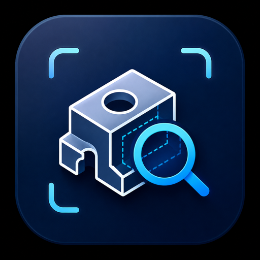
| 문서 종별 | 사업보고서(개발·운영·검증 결과) |
|---|---|
| 대상 사업 | 스타프로젝트 본선 8주 코칭 (2026-08-18 ~ 10-12) |
| 서비스 주소 | https://naverogq.onrender.com |
| 공개 범위 | 코드·문서 전부 공개 (MIT 라이선스) |
| 총 면수 | 50면 (본문 46면 · 붙임 4면) |
| 항목 | 내용 |
|---|---|
| 문서명 | CADLens 사업보고서 — 전산응용기계제도기능사 실기 도면 자동 검사 서비스 개발 및 운영 결과 |
| 작성 기관 | 팀 네이놈 (구미전자공업고등학교) |
| 작성 책임 | 박지완 · 장우영 · 안대열 · 김승준 (담당은 무작위 배정, 교체 시 기록에 남김) |
| 작성일 | 2026년 9월 24일 |
| 기준 시점 | 본선 8주 코칭 제6주차(W6, 2026-09-22 ~ 09-28) 종료 전 기준 |
| 보고 범위 | 사업 추진 배경, 수요 조사, 시스템 설계·구현, 채점 체계, 정확도 검증, 문제 관리, 이용 현황과 지표, 준수 사항, 기대효과 및 향후 계획 |
| 근거 자료 | 프로젝트 저장소 내 측정 기록 및 운영 서버 통계 공개 창구(/api/stats) |
| 원칙 | 구체적 적용 |
|---|---|
| 측정하지 않은 것은 쓰지 않는다 | 본문의 모든 수치는 저장소에 남아 있는 측정 기록 또는 운영 서버 응답에서 인용하였다. 추정치·기대치를 실적으로 적지 않았으며, 아직 측정하지 못한 항목은 "미측정"으로 표기하였다. |
| 표본이 작으면 비율과 실수를 같이 쓴다 | 백분율만 적으면 표본 크기가 가려지므로 35%(11/31)와 같이 병기하였다. |
| 불리한 사실을 먼저 쓴다 | 검증 결과의 한계, 미해결 문제, 판정 불가 항목을 해당 장의 앞부분에 배치하였다. |
| 문제를 지어내지 않는다 | 실제로 발생한 사안만 문제로 기록하였다. "개선하면 좋을 점"은 문제가 아니라 향후 계획으로 분류하였다. |
| 신뢰할 수 없는 수치는 제외한다 | 2026-09-21 주간 방문 수치는 원인을 확인하지 못하여 집계에서 제외하고, 제외 사유를 제8장에 명시하였다. |
| 용어 | 뜻 |
|---|---|
| 오작(誤作) | 공개문제 채점 기준에서 정한 실격 사유. 하나라도 해당하면 점수와 무관하게 불합격 처리된다. |
| DWG · DXF | CAD 도면 파일 형식. DXF는 공개 규격이고 DWG는 변환을 거쳐 읽는다. |
| 검출률(recall) | 도면에 실제로 있는 결함 중 검사기가 찾아낸 비율. 낮으면 수험생이 놓친 것을 그대로 놓친다. |
| 정확도(precision) | 검사기가 지적한 것 중 실제 결함인 비율. 낮으면 멀쩡한 도면을 틀렸다고 하여 혼란을 준다. |
| 완전 일치 | 한 도면의 지적 목록이 정답과 정확히 같은 경우. 부분 정답을 후하게 세지 않기 위해 함께 기록한다. |
| 북극성 지표 | 사업의 성패를 대표하는 단일 지표. 본 사업에서는 주간 재검사 사용자 수로 정하였다. |
| 퍼널(funnel) | 방문부터 목표 행동까지의 단계별 잔존 인원. 어느 단계에서 이탈이 큰지를 본다. |
| 코호트(cohort) | 처음 들어온 시점이 같은 이용자 묶음. 이후 주에 몇 명이 돌아오는지를 본다. |
CADLens는 제출 직전 확인을 돕는 보조 도구이며 공식 채점이 아니다. 한국산업인력공단 및 Q-Net과 아무런 관계가 없고, 검사 기준은 KS 규격과 공개된 채점 기준만을 근거로 작성하였다. 비공개 채점표를 열람하거나 전재한 사실이 없다. 실제 시험에서는 해당 회차의 공개문제와 감독위원 지시사항이 우선한다.
| 번호 | 표 제목 | 면 |
|---|---|---|
| 표 1~3 | 문서 개요 · 기재 원칙 · 용어 | 2 |
| 표 4~6 | 응시 현황 · 목표와 지표 · 추진 일정 | 8~10 |
| 표 7~8 | 면담 대상과 방법 · 최근 실수 요지 | 11~12 |
| 표 9~10 | 조사 반영 내역 · 개발 제외 범위 | 15 |
| 표 11~13 | 처리 절차 · 모듈 구성 · 화면 구성 | 17~19 |
| 표 14~15 | 운영 환경 · 속도 제한 설정값 | 20~21 |
| 표 16~19 | 변환 경로 · 추출 정보 · 판정 불가 · 해석 오류 | 22~25 |
| 표 22~24 | 검사 항목 37종 전체 | 28~30 |
| 표 25~27 | AI 4중 경로 · 모델 실측 · 비채점 항목 | 31~33 |
| 표 28~30 | 표본별 검증 결과 | 35~36 |
| 표 31~32 | 미검출 항목 · AI 점수 편차 | 38~39 |
| 표 34~36 | 계측 이벤트 · 주차별 퍼널 · 개선 전후 | 43~45 |
| 표 37~40 | 개인정보 · 미성년자 보호 · AI 표기 · 보안 점검 | 46~48 |
| 번호 | 그림 제목 | 면 |
|---|---|---|
| 그림 1 | 응시자와 합격률 추이 | 8 |
| 그림 2 | 배점 구성 | 26 |
| 그림 3 | 검사 항목 분류별 개수 | 28 |
| 그림 4 | 채점 모델 실측 | 32 |
| 그림 5 | 표본별 검출률 | 35 |
| 그림 6 | AI가 본 도면 넓이 | 36 |
| 그림 7 | AI 점수 편차 | 39 |
| 그림 8 | 문제 24건 처리 현황 | 41 |
| 그림 9~10 | 일자별·주차별 이용 추이 · 퍼널 | 43~44 |
| 그림 11 | 타 종목 규칙 재사용률 | 49 |
| 그림 12~13 | 결과 화면 · 수정 예시 전후 | 19, 33 |
| 도표 작성 근거 | ||
표와 그림의 모든 수치는 저장소 내 측정 기록 또는 운영 서버
/api/stats 응답에서 인용하였다. 도표 13종은 docs/fig/make_figs.py
한 파일로 재생성할 수 있으며, 수치를 그림에 직접 기입하지 않고 코드 내 값으로 보유한다. | ||
전산응용기계제도기능사 실기시험은 5시간 안에 도면을 완성하여 그 자리에서 제출하는 작업형 시험이다. 제출한 뒤에는 수정할 수 없다. 그런데 불합격의 사유는 대부분 도면을 그리는 능력의 부족이 아니라 표면거칠기 값의 미기입, 기하공차의 데이텀 누락, 원·구멍의 지름 치수 누락과 같은 표기의 빠뜨림이다. 이 가운데 일부는 감점이 아니라 곧바로 오작(실격)에 해당한다.
본 사업은 이 문제를 도면 파일을 올리면 빠진 항목을 도면 위에 표시해 주는 웹 검사기로 해결하고자 한 것이다. DWG 또는 DXF 도면을 업로드하면 37개 항목을 자동으로 확인하고, 문제가 있는 위치를 도면 그림 위에 번호로 표시한다. 지적마다 감점 사유와 수정 방법을 함께 제시한다. 회원가입과 설치가 없으며 무료로 운영한다.
/api/stats로 공개한다. 정상 주간(09-14~20) 기준 방문
31명 중 11명이 검사를 시작하고, 그중 10명이 같은 주에 수정하여 재검사하였다.① 리텐션 곡선의 실측값이 없다. 방문자 식별값에 주차가 포함되어 있어
주(週)를 넘어 동일인 여부를 확인할 수 없는 구조였다. 2026-09-24에 계측을 추가하였으므로
첫 수치는 09-29에 산출된다. 추정값으로 곡선을 채우지 않았다.
② 2026-09-21 주간 방문 수치(1,199명)는 집계에서 제외하였다. 같은 주 검사 인원이
29명에 불과하여 사람의 접속으로 보기 어려우나 원인을 특정하지 못하였다.
③ 정확도 100%는 한 학생의 도면, 6개 항목 기준이다. 상용화 판단 근거로 쓸 수 없다.
| 시기 | 주요 경과 | 확인 문서 |
|---|---|---|
| 2026-08 초 | 합성 기준 도면 18장으로 최초 정확도 측정. 당시 검사 항목 31개 | accuracy.md |
| 08-22 | 단위가 밀리미터가 아닌 도면이 백지로 렌더링되는 결함 발견 — AI가 도면이 아니라 201바이트의 빈 그림을 채점하고 있었음 | P01 |
| 08-26~28 | 대면 면담 5건 실시. 시험 시간을 4시간으로 잘못 적어 둔 전제를 5시간으로 정정(08-29) | interviews.md |
| 08-30 | 문제 정의 한 문장 확정(면담 5건 반영) | plan/w1 |
| 09-01~07 | 개발 범위 확정, 아키텍처 정리, AI 사용 기록 작성, 보안 점검 실시 | mvp.md 외 |
| 09-06 | 실제 도면 검사 시 9장 전부 오작 판정. 학생 도면 32장 변환은 0/32로 실패 | accuracy.md |
| 09-11 | Inventor 2027 설치 후 30/32 변환 성공 → 실제 도면 23장으로 재측정. 같은 날 AI가 도면의 29~51%만 보고 있던 결함과 윤곽선을 한 장도 찾지 못하던 결함을 발견·조치 | accuracy.md |
| 09-16 | 공개 서버 운영 개시. 같은 주부터 이용 현황 집계 시작 | metrics.md |
| 09-18 | 채점 모델 실측 후 1순위 교체 — 종전 모델은 20회 중 18회 실패 | ai_usage.md |
| 09-23~25 | 퍼널 작성, 비인적(非人的) 접속 제외, 코호트 계측 도입, 개선 1건 적용 | metrics.md |
우선순위는 번호 순서이며, 상위 항목이 해결되지 않으면 하위 항목을 수행할 의미가 없다.
학습용 도구가 틀린 내용을 확신 있게 제시하면 이용자는 틀린 것을 학습한다. 따라서 본 사업은 잘 되는 것을 알리는 일보다 되지 않는 것을 공개하는 일에 더 비중을 두었다. 확실하지 않은 사안은 감점하지 않고 "사람 확인 필요"로 남기며, AI 채점 경로가 모두 불가한 경우에는 해당 30점을 공란으로 두고 점수를 임의로 채우지 않는다.
전산응용기계제도기능사 실기시험은 작업형으로 시행되며, 소요 시간은 약 5시간, 합격 기준은 100점 만점에 60점 이상이다. 수험자는 주어진 조립도를 보고 부품도와 3D 등각투상도를 작성하여 시험장에서 제출한다. 제출 이후에는 수정이 불가능하므로, 제출 직전의 확인이 결과에 직접 영향을 준다.
채점 기준은 8개 항목으로 나뉘며, 각 항목 안에서 실제로 확인해야 하는 세부 사항은 20개를 넘는다. 수험자는 작도에 집중하는 5시간 동안 이 확인 목록을 스스로 유지해야 한다.
불합격의 상당수는 작도 능력의 문제가 아니라 표기의 빠뜨림에서 비롯된다. 이러한 빠뜨림이 혼자서는 잘 발견되지 않는 이유는 세 가지이다.
기호 하나가 누락되어도 도면이 허전해 보이지 않는다. 즉 사람의 눈이 놓치도록 형성된 문제이며, 이는 기계적 계수(計數)가 사람보다 유리한 영역임을 뜻한다. 본 사업이 "대신 작도해 주는 도구"가 아니라 "빠진 것을 찾아 주는 도구"로 설계된 근거이다.
실습 시간에는 교사 1명이 학생 30명의 도면을 확인한다. 그 내용의 대부분은 "거칠기 값이 비었다", "데이텀이 없다"와 같은 동일한 확인의 반복이다. 이 부분을 자동 선별하면 교사의 시간을 기계가 대신할 수 없는 지도에 배분할 수 있다.
docs/왜_만들었나.md, docs/interviews.md,
docs/impact.md, Q-Net 종목 정보| 확인 방식 | 확인 시점 | 확인 범위 | 한계 |
|---|---|---|---|
| 본인 재확인 | 작도 중 · 제출 직전 | 본인이 기억하는 항목 | 빠뜨린 항목은 애초에 기억에 없다. 면담 5건 전원이 본인 확인만으로는 발견하지 못하였다 |
| 동료 상호 확인 | 출력 후 | 동료가 아는 항목 | 출력 이후에야 가능하여 시점이 늦다. 면담 1번 대상은 종료 17분 전에 발견하였다 |
| 교사 첨삭 | 제출 후 수일 | 전 항목 | 정확하나 가장 늦다. 면담 3번 대상은 이틀 뒤에 확인하였다. 교사 1인이 학생 30명을 담당한다 |
| 본 서비스 | 임의 · 수 초 | 37개 항목 | 판독 가능한 범위로 한정된다. 인쇄 단계의 사안과 설계 판단은 다루지 않는다(제6장 제5절) |
본 사업은 위 표의 마지막 행을 채우는 것이며 앞의 항목들을 대체하지 않는다. 특히 교사 첨삭이 수행하는 "왜 이 면을 정면도로 골랐는가"와 같은 판단은 대체 대상이 아니다.
| 연도 | 필기 응시자 | 실기 응시자 | 실기 합격률 | 실기 불합격 추정 인원 |
|---|---|---|---|---|
| 2021 | 10,856명 | 5,464명 | 45.3% | 2,989명 |
| 2022 | 8,562명 | 3,557명 | 51.1% | 1,739명 |
| 2023 | 10,180명 | 3,234명 | 50.1% | 1,614명 |
| 2024 | 10,044명 | 3,100명 | 53.0% | 1,457명 |
| 2025 | 9,752명 | 3,399명 | 50.6% | 1,679명 |
| 평균 | 9,879명 | 3,751명 | 50.0% | 1,896명 |
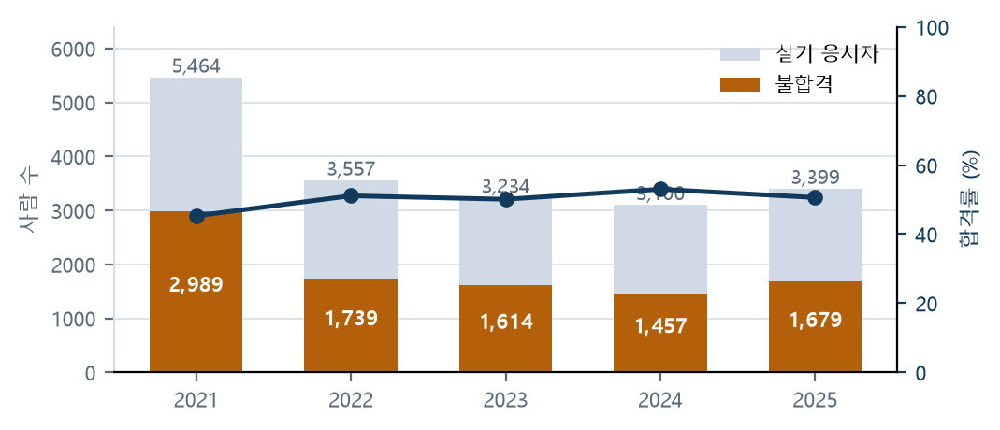
우리는 전산응용기계제도기능사 실기를 혼자 준비하는 수험생이 도면을 제출하기 직전에 겪는, 혼자 볼 때는 무엇을 빠뜨렸는지 짚어 줄 사람이 없고 남이 짚어 줘도 그때는 고칠 시간이 없는 문제를, 도면 파일을 올리면 빠진 항목을 도면 위에 찍어 주는 웹 검사기로 없앤다.
위 문제 정의를 개발 범위 판단에 쓸 수 있도록 "도면을 올려 검사 결과를 보고 고친다" 한 문장으로 좁혔다. 이 문장에 해당하지 않는 기능은 사업 기간 중 개발하지 않는다는 기준으로 사용하였다(제2장 제4절 참조).
방문자 수는 늘려도 제품이 좋아졌다는 뜻이 되지 않는다. 반면 수정하여 다시 올렸다는 사실은 ① 지적이 이해되었고 ② 고칠 만했으며 ③ 다시 확인할 가치가 있었다는 세 가지를 동시에 뜻한다. 따라서 본 사업은 단일 대표 지표(북극성 지표)를 주간 재검사 사용자 수로 정하였다.
| 구분 | 내용 |
|---|---|
| 북극성 지표 | 주간 재검사 사용자 수 — 한 주 안에 도면을 두 번 이상 검사한 사람의 수. 2026-08-30 기준 0명 → 8주 후 주 20명 |
| 보조 지표 ① | 주간 검사 시작 인원 — 방문자 중 실제로 도면을 올린 사람의 수 |
| 보조 지표 ② | 방문 → 검사 시작 전환율(최대 이탈 구간) |
| 품질 지표 ① | 실제 수험생 도면 기준 검출률 및 오지적 건수 |
| 품질 지표 ② | AI 점수의 실행 간 편차(표준편차) |
| 측정 주기 | 주 단위(방문자 식별값이 주 단위로만 유효) |
| 공개 방식 | 웹 화면 하단과 /api/stats에 그대로 공개. 비공개 집계를 따로 두지 않음 |
집계 과정에서 이름이 비슷하나 정의가 다른 두 수치가 존재하여, 본 보고서의 기준을 다음과 같이 고정한다.
recheckers — 그 주에 검사를 2회 이상 수행한 사람의 수(사람 단위).
본 보고서의 북극성 지표는 이 값이다.rechecks — 결과 화면에서 지난 결과와의 비교가 표시된 횟수(횟수 단위).
참고 지표로만 쓰며 목표 대비 실적에는 사용하지 않는다.| 주간 | 재검사 사용자 | 목표(주 20명) 대비 | 비고 |
|---|---|---|---|
| 2026-08-24 ~ 08-30 | 0명 | 0% | 집계 개시 주간 |
| 08-31 ~ 09-06 | 0명 | 0% | 검사 인원 2명 |
| 09-07 ~ 09-13 | 5명 | 25% | — |
| 09-14 ~ 09-20 | 10명 | 50% | 09-16 공개 서버 운영 개시 |
| 09-21 ~ 09-27 | 집계 제외 | — | 비인적 접속 혼입 의심. 사유는 제8장 제2절 |
/api/stats의 weeks 응답(2026-09-23 조회)다음 항목은 의도적으로 목표에서 제외하였다.
| 전제 | 내용 |
|---|---|
| 사람 단위 집계 | 전환율은 사람 수로 계산한다. 횟수로 계산하면 1인이 여러 번 수행한 것이 전환으로 잡혀 비율이 성립하지 않는다. 최소 단위는 주(週)이다 |
| 비인적 접속 제외 | 2026-09-23부터 적용. 그 이전 기록은 소급 정정이 불가능하다 |
| 표본이 작을 때 | 비율과 실수를 병기한다 |
목표 미달 시에도 그 사실을 그대로 기재하고 원인을 제품 문제와 대상 문제로 나누어 분석한다. 지표를 달성 가능한 다른 수치로 교체하지 않는다.
| 주차 | 기간 | 주제 | 산출물 |
|---|---|---|---|
| W1 | 08-18 ~ 08-24 | 킥오프 — 미션과 목표 | 팀 목표 1장 |
| W2 | 08-25 ~ 08-31 | 사용자와 문제 | 대면 면담 5건 · 문제 정의 한 문장 |
| W3 | 09-01 ~ 09-07 | 개발 범위 · 아키텍처 · AI 윤리 | 개발 범위표 · 아키텍처 1장 · AI 사용 기록 · 보안 점검표 |
| W4 | 09-08 ~ 09-14 | 1차 데모데이 · 중간 점검 | 3분 시연 영상 |
| W5 | 09-15 ~ 09-21 | 운영 개시와 초기 이용자 | 한 줄 소개 · 운영 개시 증빙 · 이용 기록 · 이탈 지점 |
| W6 | 09-22 ~ 09-28 | 리텐션 · 지표(본 보고서 기준 주차) | 계측 이벤트 · 퍼널 · 리텐션 · 개선 전후 · 북극성 지표 현황 |
| W7 | 09-29 ~ 10-05 | 발표 · 피칭 | 10분 발표 대본 |
| W8 | 10-06 ~ 10-12 | 2차 데모데이 · 2차 제출 정비 | 최종 지표 보고 · 10분 발표 영상 · 문서 완비 |
담당자는 무작위로 배정한다. 각자 잘하는 일만 계속 맡으면 한 사람만 숙련되고 나머지는 8주 동안 배우는 것이 없기 때문이다. 배정받은 사람이 수행할 수 없는 일이면 그날 안에 교체하고 누구와 교체하였는지 기록에 남긴다. 조용히 다른 사람이 대신 수행하면 기록이 사실과 달라지기 때문이다. 회의·데모데이 참석·합의가 필요한 일은 배정하지 않고 "전원"으로 둔다.
| 구분 | W1 | W2 | W3 | W4 | W5 | W6 | W7 | W8 | 합계 |
|---|---|---|---|---|---|---|---|---|---|
| 박지완 | 8 | 3 | 5 | 2 | 5 | 2 | 3 | 2 | 30건 |
| 장우영 | 1 | 4 | 4 | 4 | 3 | 4 | 2 | 2 | 24건 |
| 안대열 | 2 | 3 | 4 | 4 | 3 | 3 | 2 | 3 | 24건 |
| 김승준 | 2 | 3 | 4 | 3 | 4 | 4 | 2 | 2 | 24건 |
| 전원(회의·참석) | 6 | 7 | 4 | 4 | 2 | 3 | 5 | 8 | 39건 |
구미전자공업고등학교 김민정 교사에게 실기 채점 항목을 수업에서 어떻게 확인하는지, 학생이 실제로 자주 틀리는 사항이 무엇인지 자문을 받아 검사 항목 선정과 지적 문구 작성에 반영하였다. 자문에 응한 분이 본 사업의 결과에 책임을 지는 것은 아니다.
| 기록물 | 내용과 갱신 주기 |
|---|---|
| 주차별 계획 | 주차마다 폴더 1개. 산출물 목록과 달성 여부를 표로 관리한다 |
| 일자별 계획 | 하루에 문서 1개. 담당자·완료 기준을 사전에, 달성 여부를 사후에 기재한다 |
| 문제 대장 | 사안 1건당 문서 1개. 해결 여부와 무관하게 보존한다(제7장) |
| 개인별 기록 | 개인마다 문서 1개. 계획과 달라졌으면 달라진 대로 기재한다 |
기록의 신뢰성을 위한 규칙 — ① 달성하지 못한 항목은 표기를 유지하고 사유를 기재한다. ② 담당을 교체하면 양쪽 기록에 모두 적는다. ③ 면담·외부 연락·참석과 같이 사람만 할 수 있는 일은 자동화 대상에서 제외한다.
개발에 착수하기 전에 우리가 가정한 문제와 실제로 겪는 문제가 같은지 확인하기 위하여 실시하였다. 두 가지가 다르면 현장 쪽이 옳다는 전제로 진행하였다.
| 번호 | 대상 | 일자 | 소요 | 장소 |
|---|---|---|---|---|
| 1 | 박*후 — 메카트로닉스과 2학년 | 2026-08-26 | 약 30분 | 구미전자공고 자동화관 |
| 2 | 박*호 — 메카트로닉스과 2학년 | 2026-08-27 | 약 30분 | 구미전자공고 자동화관 |
| 3 | 배*후 — 2학년, 메카트로닉스과 아님, 독학 | 2026-08-27 | 약 30분 | 구미전자공고 자동화관 |
| 4 | 최*영 — 메카트로닉스과 2학년 | 2026-08-28 | 약 30분 | 구미전자공고 자동화관 |
| 5 | 손선생님 — 기계제도 담당 교사 | 2026-08-28 | 약 30분 | 구미전자공고 자동화관 |
박*후와 같이 가려 표기한다. 대상 대부분이 미성년자이기 때문이다.
별도로 설문 응답 1건을 받았으며 대면 면담과 분리하여 집계한다.다섯 명에게 동일한 질문지 5개를 그대로 사용하였다. 질문 1에서 응답한 가장 최근 실수 한 건을 질문 2부터 4까지 끝까지 추적하는 구조이다. 일반론이 아니라 구체적 사건 하나를 끝까지 따라가야 시간·시점·대응이 수치로 나오기 때문이다.
| 원칙 | 사유 |
|---|---|
| 직접 인용 3개는 들은 말 그대로 적는다 | 다듬으면 대상자의 말이 아니라 조사자의 말이 된다 |
| 현재 사용 중인 대안은 구체적으로 적는다 | "그냥 확인한다"가 아니라 "친구에게 메신저로 보내 확인을 요청한다" 수준으로 적는다 |
| 강한 신호는 이미 금전이나 시간을 지출한 경우로 한정한다 | "출시되면 써 보겠다"는 신호로 인정하지 않는다 |
| 종료 후 5분 안에 기록한다 | 지연되면 인용이 요약으로 변질된다 |
| 확인되지 않은 항목은 "미기록"으로 둔다 | 도면 파일 수령 여부는 현장에서 적지 못하여 미기록으로 남겼다. 지어내지 않는다 |
대면 면담과 별도로 설문 응답 1건을 수신하였다. 표본이 1건이므로 대면 면담과 합산하지 않고 분리하여 집계한다. 설문에서만 제기된 요구(재질 기입 · 요목표 · 거칠기 비교표 검사 추가)는 검사 항목 확대의 근거로 사용하지 않았다. 요구가 있었다는 사실과 반영하지 않았다는 사실을 함께 기록한다(제4절).
면담에서 도출한 내용은 가설이므로 이후 단계에서 검증하였다. "빠뜨림이 불합격의 주된 사유"는 공개 채점 기준의 오작 조항과 대조하여 확인하였고, "발견 시점이 늦다"는 면담 5건의 시점을 수치로 기록하였다(표 8). "기계적 계수가 유리하다"는 실제 도면 23장에서 검출률 100% · 오지적 0건으로 확인하였으나 6개 항목 기준이라는 한계가 있다.
| 대상 | 빠뜨린 사항 | 발견 시점과 경로 | 수정 소요 |
|---|---|---|---|
| 박*후 2학년 | 베어링 접촉부 표면거칠기 기호 1개 | 출력 후 동료와 상호 확인 종료 17분 전 |
기호 기입 2분, 재출력 포함 총 11분 |
| 박*호 2학년 | 커버 뷰가 자동으로 2:1 척도로 설정된 상태 | 출력 직전 속성값 점검 | 6분 40초 수정, 총 11분 후 출력 |
| 배*후 2학년·독학 | 데이텀과 기하공차 전부 미기입 | 이틀 뒤 첨삭에서 (모의 배점 8점 전부 상실) | 복습에 1시간 25분 |
| 최*영 2학년 | 프린터의 직전 A4 설정이 유지되어 축소·잘림 발생 | 인쇄물로 확인 종료 21분 전 | 설정 수정·재출력·검토 11분 |
| 손선생님 담당 교사 | 내부 형상을 나타낼 단면도 누락 | 작업 3시간 32분 경과 시점 | 단면 작성과 치수 재배치 24분 |
다섯 명이 제시한 최근 실수를 본 서비스의 검사 항목에 하나씩 대조하였다. 검사 항목을 먼저 만들고 사후에 끼워 맞춘 것이 아니라, 먼저 듣고 나서 대조한 것이다.
| 최근 실수 | 대응 검사 | 판정 | 비고 |
|---|---|---|---|
| 표면거칠기 기호 1개 누락 | EX_SURFACE_FEW |
검출 | 가공면 대비 기호 수 부족을 계수 |
| 뷰 하나만 2:1 척도 | EX_VIEW_SCALE_MIXED |
검출 | 뷰별 척도 상이 여부를 확인 |
| 데이텀·기하공차 전부 미기입 | DQ_NO_GEOMETRIC_TOL |
검출 | 오작 판정으로 우선 표시 |
| 프린터 A4 설정으로 축소·잘림 | 해당 없음 | 미검출 | 인쇄 단계의 사안으로 DXF에 정보가 없다. 검출 불가임을 그대로 공표한다 |
| 단면도 누락 | EX_VIEW_NO_LABEL + AI_PROJECTION |
일부 | 문자 표기 누락은 규칙이, 단면 필요 여부는 AI가 판단 |
면담에서 제기된 요구를 모두 반영하지는 않았다. 반영하지 않은 항목과 그 사유를 기록한다.
| 제기된 요구 | 제기 건수 | 반영하지 않은 사유 |
|---|---|---|
| 출력 설정으로 인한 축소·잘림 확인 | 면담 2건 | 인쇄 단계의 사안으로 도면 파일에 정보가 없다. 검출이 원천적으로 불가능하다 |
| 재질 기입 · 요목표 · 거칠기 비교표 검사 추가 | 설문 1건 | 표본이 1건이므로 검사 항목 확대의 근거로 삼지 않았다 |
요구를 전부 수용하지 않았다는 사실을 기록에 남긴다. 사유가 기록되어 있어야 이후 판단을 재검토할 수 있다.
주 2회 × 2시간 × 6주 동안 공개문제 8세트를 시간을 재어 다시 작도하였다. 자신의 실수만 적은 A4 체크리스트를 만드는 데 30분을 썼고, 표면거칠기를 빠뜨린 뒤로는 책상 오른쪽에 두고 매번 확인한다. 실기 교재에 32,000원을 지출하였다.
커버 부품의 뷰가 자동으로 2:1 척도로 설정된 것을 인지하지 못한 채 끝까지 치수를 기입하였다. 출력 직전 속성값 점검 단계에서 발견하여 6분 40초 동안 수정하였고, 총 11분 뒤에 출력하였다.
작업 시작 시 템플릿이 제3각법인지, 2D 도면틀이 A2 작업 영역인지, 출력 설정이 A3인지를 먼저 확인한다. 부품마다 기본 뷰를 배치하는 즉시 속성 창에서 1:1을 확인하고, 이후 전체 뷰를 선택하여 한 번 더 대조한다. 최종 검토 순서는 다음과 같이 고정되어 있다.
요구 부품번호 → 투상도 수와 배치 → 단면 방향 → 전체 치수 → 치수공차·끼워맞춤 → 표면거칠기 → 데이텀·기하공차 → 재료·열처리·주서 → 표제란·부품란
국비 과정이라 본인 부담은 크지 않았으나 실기 교재에 32,000원을 지출하였다. 최근 한 달은 평일 저녁 2시간씩 주 3회, 토요일은 5시간 모의시험을 수행하였다. 완성 11세트이며 세트마다 종료 시각과 수정 시간을 표 계산 프로그램에 기록한다. 검토 시간이 처음 4분에서 현재 18~22분으로 증가하였다.
기준면을 확신하지 못하여 데이텀과 기하공차를 전부 비운 채 제출하였다. 이틀 뒤 첨삭에서 모의 배점 8점 전체가 상실된 것을 확인하고서야 문제의 크기를 인지하였으며, 복습에 1시간 25분을 사용하였다.
다른 네 명은 시험 종료 직전 또는 출력 직전에 발견하였으나, 이 대상은 이틀이 지나서야 알았다. 혼자 준비하는 경우 확인해 줄 사람 자체가 없어 발견 시점이 사실상 무한정 늦어진다는 것을 보여 준다. 본 사업의 대상이 "혼자 준비하는 수험생"으로 좁혀진 직접적 근거이다.
종이 체크리스트를 사용한다. 첫 줄에 요구 부품번호 4개를 적고 완성할 때마다
표시한다. 부품마다 정면·평면·측면 또는 필요한 단면 → 전체 크기와 위치 치수 →
일반 치수공차 → H7·g6 끼워맞춤 → 표면거칠기 → 데이텀 → 기하공차 칸을 점검한다.
공차를 임의로 넣지 않기 위하여 조립도에서 접촉면과 회전부를 형광펜으로 먼저 표시한 뒤
시작한다.
유료 강의는 구매하지 않았고 준비 기간은 넉 달이다. 평일 퇴근 후 1시간 30분 × 주 4일, 주말은 공개문제를 5시간 측정하여 푼다. 출력 파일까지 완성한 것이 13세트, 중고 교재 18,000원을 지출하였다. 첫 시험에서 시간 내에 2D를 완료하지 못해 출력 자체를 하지 못하였기 때문에, 금전보다 한 번에 끝까지 완성하는 연습에 시간을 가장 많이 쓴다.
CAD 도면 자체는 정상이었으나 프린터에 남아 있던 직전 A4 설정을 그대로 사용하여 축소·잘림이 발생하였다. 종료 21분 전 인쇄물로 확인하여 설정 수정·재출력· 검토에 총 11분을 사용하였다.
내용 검토와 출력 검토를 완전히 분리한다. 출력 단계에서는 내용으로 돌아가지
않고 PDF 페이지 크기 A3 → 프린터 용지 A3 → 맞추기 → 가로/세로 방향 → 중앙 배치 →
흑백 → 선 굵기 → 잘림 여부 여덟 개만 확인한다. PDF는 100%와 200%를 모두 확인한다.
온라인 실기 강의 한 달 40,000원. 집에 A3 프린터가 없어 복사집에서 2주 동안 14회 출력, 약 18,200원을 지출하였다. 동일한 PDF가 아니라 척도와 선 가중치를 조금씩 바꾸어 가며 인쇄물에서 어떻게 보이는지 비교하였고, 위 출력 점검 8개 항목을 직접 만들었다.
내부 턱을 나타낼 단면도를 누락하고 숨은선만 사용하여 내부 치수 기입이 곤란해졌다. 작업 3시간 32분 시점에 발견하여 단면 작성과 치수 재배치에 24분을 사용하였고, 그 결과 최종 확인 시간이 5분으로 줄었다.
시작하자마자 CAD를 켜지 않는다. 요구 부품번호를 먼저 표시하고 기준 정면을 정한 다음, 내부 형상이 있는 곳에 "단면 필요?"를 적어 둔다.
야간 학원 6주 과정 420,000원. 화·목은 퇴근 후 3시간 수업, 일요일은 자습실에서 5시간 모의. 끝까지 출력한 것이 9장이며 처음 두 장은 5시간 내에 완료하지 못하였다. 단면을 놓친 뒤에는 투상도 선택만 따로 연습하기 위하여 조립도 15개에서 필요한 뷰를 종이에 스케치하였고, 그 연습에만 약 7시간을 사용하였다.
| 조사에서 확인된 사실 | 반영 조치 | 반영일 | 확인 |
|---|---|---|---|
| 실기 소요 시간은 4시간이 아니라 5시간 — 5명 전원이 5시간이라 답하였고 1명은 "5시간 중 4시간 43분"으로 분 단위까지 제시 | W1 문서의 "4시간짜리 실기 도면" 기재를 5시간으로 정정. Q-Net 종목 정보도 5시간 | 08-29 | plan/w1 |
| 발견 시점이 항상 늦다(종료 17분 전 ~ 이틀 뒤) | 대상을 "혼자 준비하는 수험생"으로 좁히고, 검사 1회를 10초 안에 끝내는 것을 설계 목표로 설정 | 08-30 | 문제 정의 |
| 수정 시간(2분)이 아니라 탐색 시간이 문제 | "대신 작도"가 아니라 "빠진 것 탐색"으로 제품 성격 고정. 도면 자동 수정은 개발 제외 | 09-01 | 개발 범위표 |
| 감점 문구만으로는 수정 방법을 모른다 | 지적마다 왜 감점인가·어디를 보는가·수정 후 확인 방법
3개 답변을 채점 직후 생성하여 저장 | 09월 중 | ai_review.py |
| 전원이 수기 체크리스트를 사용 중 | 검사 항목을 체크리스트 형태로 화면에 노출하고, 항목별 KS 근거를 /ks 화면으로 공개 |
09월 중 | static/ks.html |
| 교사 자문 — 수업에서 실제로 확인하는 항목 | 검사 항목 선정과 지적 문구 작성에 반영 | — | — |
"도면을 올려 검사 결과를 보고 고친다"는 핵심 행동에 해당하지 않는 기능은 사업 기간 중 개발하지 않기로 하였다. 조사에서 요구가 제기되었음에도 제외한 항목도 사유와 함께 기재한다.
| 제외 항목 | 사유 |
|---|---|
| 회원가입 · 로그인 · 계정 | 이용자 대부분이 미성년자이므로 개인정보를 아예 받지 않는 것을 원칙으로 한다 |
| 채팅 · 댓글 · 게시판 · 프로필 · 친구 | 이용자끼리 접촉할 수 있는 공간을 만들지 않아 접촉·괴롭힘이 발생할 구조 자체를 제거한다 |
| Inventor 원본(ipt · idw · iam) 직접 판독 | 3D 판독 모듈이 별도로 필요하며, 2D 검사를 먼저 안정화하는 것이 우선이다 |
| 타 종목 확장 | 종목별 공개문제를 3개 회차 이상 확보하기 전에는 규칙을 만들지 않는다. 확인되지 않은 기준으로 규칙을 만들면 응시자에게 틀린 지적을 하게 된다 |
| 학급 단위 화면 · 학교 단위 계약 | 8주 목표가 아니다. 교사 대상 질의 3건에 대한 회신도 아직 받지 못하였다 |
| 재질 기입 · 요목표 · 거칠기 비교표 검사 추가 (설문에서 제기된 요구) |
표본이 설문 응답 1명뿐이므로 검사 항목을 늘리지 않기로 하였다. 요구가 있었다는 사실과 반영하지 않은 사실을 함께 기록한다 |
| A4 출력 잘림 · 파일 손상 대응 (면담 2건에서 제기된 요구) |
출력 설정과 CAD 도구의 문제로 DXF 안에 해당 정보가 없다. 검출이 원천적으로 불가능하므로 범위 밖으로 분류하고, 그 사실을 공표한다 |
| AI 점수를 최종 확정 점수로 표시 | AI가 매기는 30점은 실행 간 편차가 있으므로 항상 "확정 점수 아님"으로 표시한다 |
| 접속·검사 횟수 외의 이용자 추적 | 지표가 필요하다는 이유로 익명 집계 원칙을 깨지 않는다 |
| 도면 자동 수정 | 지적과 수정 방법만 제시한다. 대신 작도하면 실기 학습이 되지 않는다 |
서버 1대로 운영한다. 도면 파일이 입력되어 결과 화면이 반환되기까지 5단계를 거치며, 그중 제4단계(채점)만 규칙과 AI로 분기한다. 동일 도면을 재검사하는 경우 저장된 AI 응답을 사용하여 외부 호출을 하지 않는다.
| ① 업로드 DWG · DXF · zip 최대 200MB |
▶ | ② 판독 치수 · 기호 · 공차 표제란 · 뷰 좌표 |
▶ | ③ 채점 규칙 70점 AI 30점 |
▶ | ④ 표시 지적 위치에 번호 부여 |
▶ | ⑤ 재검사 수정 후 재업로드 전후 비교 |
검사 1회를 10초 이내에 종료하는 것을 목표로 한다. 도면 판독과 미리보기 작성을 수행하는 동안 AI 채점을 병행하며, AI 응답은 8초까지만 대기한다. 그 안에 도착하지 않으면 나머지 결과를 먼저 반환하고 투상도 항목만 "AI 채점 중"으로 표시한 뒤, 채점이 도착하면 해당 위치를 갱신한다.
README.md 아키텍처 절, docs/architecture.md,
main.py, check.py| 구성 요소 | 의존 대상 | 해당 요소가 불가할 때 |
|---|---|---|
| 도면 판독 | DXF 판독 라이브러리 | 검사 자체가 불가하다. 대체 경로 없음 |
| DWG 변환 | 서버 내부 변환기 | DXF 내보내기 절차를 안내한다 |
| 규칙 채점 | 판독 결과 | 판독이 되면 항상 동작한다. 외부 의존 없음 |
| AI 채점 | 외부 제공자 4곳 | 4중 폴백. 전부 불가하면 30점 공란. 규칙 70점과 오작 판정은 유지된다 |
| 이용 집계 | 외부 데이터베이스 | 서버 내부 저장으로 대체되며 재기동 시 초기화된다. 검사 동작에는 영향을 주지 않는다 |
| 단계 | 명칭 | 처리 내용 |
|---|---|---|
| 1 | 업로드 | 웹 화면에서 파일을 끌어다 놓으면 서버로 전송한다. zip으로 업로드하면 압축을 해제하고 내부에서 도면을 탐색한다. 최대 200MB. 검사 항목은 이용자가 선택적으로 켜고 끌 수 있다. |
| 2 | 변환 | DWG인 경우 DXF로 변환한다. 서버에 설치된 dwg2dxf(LibreDWG)를 우선 사용한다.
변환 수단이 없으면 "DXF로 내보내어 업로드해 달라"고 안내한다. 처음부터 DXF이면 생략한다. |
| 3 | 판독 | 치수 개수와 값, 표면거칠기 기호, 기하공차의 데이텀, 표제란 내용, 뷰 경계와 좌표, 도면 윤곽선, 레이어·선종류·선 굵기·문자 높이를 추출한다. |
| 4 | 채점 | 100점 중 70점은 규칙으로, 30점은 AI로 채점한다. 오작(실격) 6종은 점수와 무관하게 먼저 판정한다. 판정에 필요한 정보가 없으면 감점하지 않고 건너뛴다. |
| 5 | 반환 | 도면을 그려 문제 위치에 번호를 표시하고, 지적 목록·점수·총평을 함께 반환한다.
응답에 Server-Timing 헤더로 단계별 소요 시간을 포함한다. |
제3단계(판독)와 미리보기 작성 중에 AI 채점을 병행한다. 규칙 채점은 판독 결과만 있으면 즉시 수행되므로, 전체 소요 시간은 사실상 AI 대기 시간에 의해 결정된다. 이 때문에 AI 대기에 8초 상한을 설정하고, 상한을 초과하면 부분 결과를 먼저 반환하는 구조를 채택하였다.
실측 결과 지적별 답변 3개와 3개 국어 번역을 생성하는 호출이 채점 호출보다 2배 이상 소요되었다(13초 대 5초). 따라서 점수와 지적을 먼저 표시하고, 답변과 번역은 수 초 뒤에 화면을 갱신하는 방식으로 분리하였다. 갱신 완료 후에는 버튼을 눌러도 서버를 다시 호출하지 않는다.
도면 내용으로 키를 생성하여 AI 응답을 저장한다. 동일 도면을 동일 모델로 재검사하면 외부 API를 호출하지 않으므로 ① 동일 도면에 동일 점수가 보장되고 ② 할당량 소모가 억제된다. 다만 캐시가 한 번도 적중하지 않는 결함이 있었고(P21), 2026-09-08 조치 후에야 성립하였다.
| 실패 지점 | 동작 |
|---|---|
| DWG 변환 불가 | 검사를 중단하고 DXF 내보내기 절차를 안내한다 |
| Inventor 원본 업로드 | 파일 종류를 식별하여
파일 > 내보내기 > DWG/DXF 절차를 안내한다 |
| 뷰 경계 판별 불가(순수 DXF) | 투상도 개수·배치 검사를 건너뛴다. "0개"로 단정하지 않는다 |
| AI 응답 지연(8초 초과) | 나머지 결과를 먼저 반환하고 투상도 항목만 "AI 채점 중"으로 표시한다 |
| AI 4개 경로 전부 불가 | 투상도 30점을 "사람 확인 필요"로 비우고 화면에 AI 비활성 상태를 표시한다. 점수를 임의로 채우지 않는다 |
| AI 응답 형식 위반 · 통계 집계 실패 | 전자는 결과를 폐기하고 "사람 확인 필요"로 처리한다. 후자는 검사에 영향을 주지 않는다 |
| 단계 | 소요 | 비고 |
|---|---|---|
| 판독 · 미리보기 작성 | 도면 규모에 비례 | 선 수천 개 규모도 초 단위로 처리되며 서로 병행한다 |
| AI 채점 | 중앙값 3.2초 · 최대 5.9초 | 전체 소요 시간을 사실상 결정한다. 8초 상한을 두는 이유이다 |
| 답변·번역 생성 | 약 13초 | 채점보다 2배 이상. 분리 처리한다 |
2026-09-18 실측(실제 도면 10장) 기준이다.
부분 반환은 투상도 항목에만 허용한다. 부분 반환과 미판정은 다르다 — 전자는 잠시 후 채워지고 후자는 채워지지 않으므로 화면에서 구분하여 표시한다.
| 모듈 | 구분 | 기능 |
|---|---|---|
main.py | 서버 | HTTP 요청 수신, 파일 수령, 결과 반환, 속도 제한, 업로드 정리 주기 실행, 관리 화면 인증 |
check.py | 제어 | 판독 → AI 채점 → 규칙 채점의 순서를 연결하는 제어 모듈 |
dwg.py | 판독 | DWG 변환, 도면 정보 추출, 미리보기 SVG 작성, 뷰 배치 분석 |
exam.py | 채점 | 검사 규칙 37종과 배점표(루브릭 8항목). 오작 판정 6종 포함 |
ai_review.py | 채점 | 도면을 PNG로 변환하여 AI에 질의, 4중 경로 폴백, 응답 형식 검증 |
fixdraw.py | 표시 | 수정 예시 도형(치수·중심 마크) 배치 계산 및 SVG 생성 |
stats.py | 집계 | 방문·검사·완료·재검사·코호트 집계. 비인적 접속 제외. 신고·문의 보관 |
variance.py | 검증 | 동일 도면을 반복 채점하여 AI 점수의 실행 간 편차를 측정 |
bench.py | 검증 | 정답표와 검사 결과를 대조하여 검출률·정확도·완전 일치를 산출 |
make_drawings.py | 검증 | 결함을 의도적으로 삽입한 합성 도면 생성 |
idw2dxf.py | 도구 | Inventor 도면(.idw)을 DXF로 일괄 내보내기 |
test_rules.py 외 | 시험 | 자동 시험. 코드 변경 시마다 실행 |
static/*.html · *.js · site.css | 화면 | 웹 화면 3종(검사 · KS 근거 · 정확도)과 공통 스타일·번역 |
static/index.html을 브라우저로
직접 열면 화면이 그대로 표시된다.도면 판독은 ezdxf(MIT), 이미지 처리는 Pillow(MIT-CMU),
도면의 그림 변환은 PyMuPDF(AGPL-3.0), DWG 변환은 GNU LibreDWG
(GPL-3.0-or-later)를 사용한다. 전염성 라이선스 2건의 취급은 제9장 제3절에 기재하였다.
모듈은 실패 시 영향 범위를 기준으로 분리하였다. 판독이 실패하면 전부가 실패하므로 판독을 가장 작게 유지하고, 외부 의존이 있는 부분(AI 질의, 이용 집계)은 실패하여도 나머지가 동작하도록 분리하였다.
| 분리 기준 | 해당 모듈 | 근거 |
|---|---|---|
| 실패가 전체를 막는 것 | dwg.py |
판독 결과 없이는 규칙 채점도 AI 채점도 불가하다. 결함이 가장 크게 발생한 지점이기도 하다 |
| 외부에 의존하는 것 | ai_review.pystats.py |
외부 제공자와 외부 데이터베이스에 의존한다. 실패가 검사를 막지 않도록 분리하였다 |
| 규격이 바뀌면 바뀌는 것 | exam.py |
검사 규칙과 배점은 종목·회차에 따라 달라진다. 타 종목 확장 시 교체 대상이 된다 |
| 화면 | 경로 | 내용 |
|---|---|---|
| 검사 화면 | / |
업로드 영역, 검사 항목 선택, 결과(도면 미리보기 + 번호 표시 + 지적 목록 + 점수), 수정 예시 전환, 지난 결과와의 비교, 예제 도면 |
| KS 근거 화면 | /ks |
검사 항목별로 어느 KS 규격과 채점 기준에서 도출되었는지 공개 |
| 정확도 화면 | /accuracy |
측정 결과와 한계, 미검출 항목을 공개 |
| 통계 창구 | /api/stats |
방문·검사·완료·재검사·주차별·코호트 집계를 가공 없이 공개 |
| 관리 화면 | /admin |
신고·문의 열람. 환경변수의 비밀번호로만 접근하며, 검색 엔진 수집과 브라우저 캐시를 차단 |
/ks, /accuracy)은 방문 수에 집계하지 않는다.
한 사람이 화면을 이동할 때마다 계수하면 방문 수가 실제보다 부풀기 때문이다.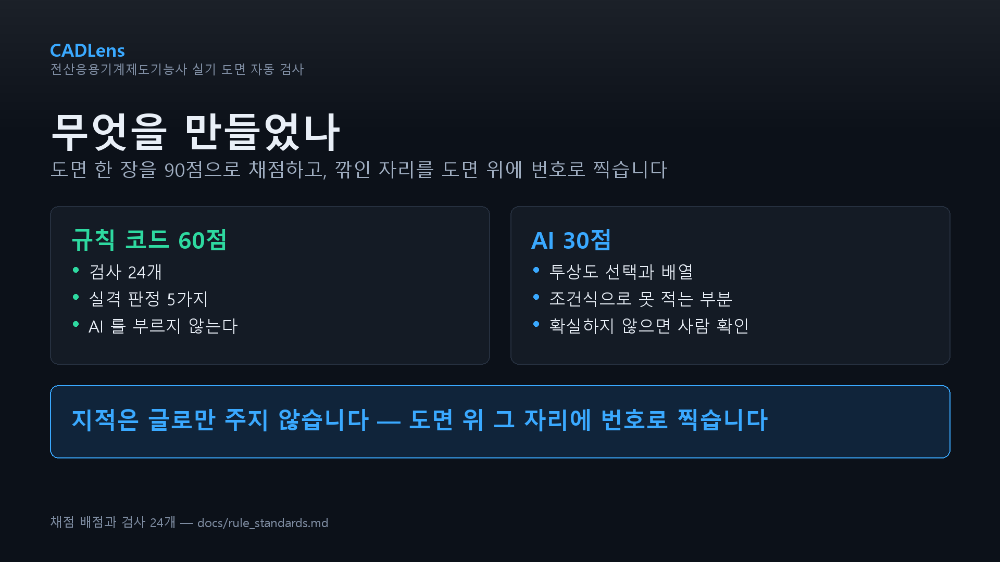
왜 감점인가 · 어디를 보는가 ·
수정 후 확인 방법 3개 답변을 확인할 수 있다. 채점 시 함께 생성하여 저장한 것이므로
누를 때 외부 호출이 발생하지 않는다.지적과 총평을 한국어 · 영어 · 일본어 · 중국어로 표시한다. 도면마다 문장이 달라 고정 번역표를 사용할 수 없으므로, 채점 결과를 한 번 더 전달하여 3개 국어를 수신한 뒤 동일 캐시에 저장한다. 번역 호출이 할당량 제한으로 실패하는 경우에는 항목명과 일반 안내로 표시한다.
주 이용자가 미성년자이므로 AI를 도면 채점 역할에 고정하는 편이 안전하며, 정해진 질문만 사용하면 답변을 사전에 생성하여 저장할 수 있어 무료 할당량도 절약된다. 이용자가 문장을 입력하여 AI와 자유롭게 대화할 수 있는 지점은 존재하지 않는다.
| 단계 | 의미 | 표시 방식 |
|---|---|---|
| 실격 | 오작 판정에 해당 | 점수와 무관하게 최상단에 별도 표시. 점수가 높아도 실격이면 불합격이라는 시험의 구조를 화면이 그대로 반영한다 |
| 오류 | 감점 대상이 확정된 사항 | 지적 목록에 표시하고 도면에 번호를 부여 |
| 경고 | 감점 여부가 조건에 따라 달라지는 사항 | 예: 도면 크기 A3. 출력 크기이므로 오작이 아니라 경고로 둔다 |
| 구분 | 사용 기술 | 비고 |
|---|---|---|
| 언어 | Python 3.13 | — |
| 웹 서버 | FastAPI 0.141.1 + Uvicorn 0.52.0 | — |
| 실행 형태 | Docker 이미지 | 동일 이미지를 로컬과 운영에서 사용 |
| 호스팅 | Render.com | 무료 플랜. 트래픽이 없으면 인스턴스가 휴면 상태로 전환됨 |
| 통계 저장 | Cloudflare D1 (hits 표) |
연결 정보가 없으면 서버 내 SQLite로 대체되는데, 이 경우 재기동 시 0부터 다시 집계된다 |
| 업로드 도면 | 서버 임시 폴더 | 해당 검사에만 사용하고 최대 1시간 후 삭제. 10분 주기로 정리 작업 실행 |
| AI 응답 | 내부 캐시 | 도면 내용 해시를 키로 사용 |
| 화면 글꼴 | 나눔스퀘어라운드(SIL OFL 1.1) | 외부에서 불러오지 않고 서버에 직접 적재 |
저장소의 주 분기(main)에 반영하면 자동으로 이미지가 빌드되어 배포된다. 코드 변경 시마다 자동 시험이 실행되며, 화면 파일은 판(version) 번호로 캐시를 무효화한다. 판 번호를 올리지 않으면 기존 방문자의 브라우저에 이전 파일이 남아 변경 사항이 적용되지 않는다.
응답에 Server-Timing 헤더를 포함하여 도면 판독 · 미리보기 작성 · AI 대기
시간을 각각 확인할 수 있다. 이 헤더로 "답변·번역 생성이 채점보다 2배 이상 소요된다"는 사실을
확인하고 처리 순서를 변경하였다(제3장 제2절).
| 제약 | 영향 | 대응 |
|---|---|---|
| 무료 플랜의 휴면 전환 | 주기 작업이 함께 정지하여 업로드 정리가 지연될 수 있다 | 미확인 사항으로 기록하고 실증 과제로 등재하였다(제9장 제3절) |
| 재기동 시 디스크 초기화 | 서버 내부 저장을 사용하면 집계가 0으로 되돌아간다 | 외부 데이터베이스를 사용한다. 연결 정보가 없으면 내부 저장으로 자동 대체된다 |
| 외부 AI 무료 할당량 | 할당량 소진 시 30점 채점이 정지한다 | 4중 폴백 구성. 동일 도면 재검사 시 저장된 응답을 사용하여 호출을 줄인다 |
| 화면 파일 캐시 | 판 번호를 올리지 않으면 기존 방문자에게 변경 사항이 적용되지 않는다 | 화면 파일 변경 시 판 번호를 함께 올린다. 실제로 계측 추가 시 이 절차를 누락할 뻔하였다 |
도면 1장의 검사는 CPU 수 초와 AI 호출 1회를 소모한다. 자동화된 반복 요청이 발생하면 무료 서버와 AI 할당량이 함께 고갈된다. 또한 계측 이벤트 창구는 북극성 지표의 입력 지점이므로, 제한이 없으면 지표 자체가 임의로 부풀 수 있다.
| 대상 | 접속자별 | 프록시 기준 | 서버 전체 | 비고 |
|---|---|---|---|---|
| 검사 요청 | 10분당 40회 | 10분당 120회 | 1시간당 600회 | 도면 1장이 CPU와 AI 호출을 소모 |
| 신고·문의 | 10분당 5회 | 10분당 20회 | 1시간당 60회 | 저장소가 한 사람에게 점유되지 않도록 제한 |
| 계측 이벤트 | 10분당 40회 | 10분당 120회 | 1시간당 600회 | 지표 신뢰성 확보 목적(2026-09-24 추가) |
검색 엔진 수집기, 링크 미리보기 생성기, 상태 점검 도구, 스크립트에 의한 접속은 이용자 에이전트 문자열을 기준으로 집계에서 제외한다(2026-09-23 적용). 에이전트를 위장하면 제외할 수 없으나, 방문 수가 실제보다 수십 배로 부풀어 오르는 상황은 방지한다. 집계 지점이 한 곳이므로 6종 이벤트 전부에 동일하게 적용된다.
| 구간 | 실측 | 비고 |
|---|---|---|
| AI 채점 호출(1순위 모델) | 중앙값 3.2초 · 최대 5.9초 | 2026-09-18, 실제 수험생 도면 10장 |
| AI 대기 상한 | 8초 | 초과 시 부분 결과 우선 반환 |
| 답변·번역 생성 | 약 13초 | 채점(약 5초)보다 2배 이상. 별도 처리로 분리 |
| 검사 1회 목표 | 10초 이내 | — |
| 일자 | 조치 | 사유 |
|---|---|---|
| 2026-09-23 | 비인적 접속 집계 제외 | 방문 수가 실제보다 수십 배로 부풀 수 있었다. 집계 지점이 한 곳이므로 6종 이벤트 전부에 동일하게 적용된다 |
| 2026-09-24 | 계측 이벤트 창구에 속도 제한 적용 | 해당 창구로 수신되는 수가 북극성 지표이므로, 제한이 없으면 지표가 임의로 부풀 수 있었다. 서버 부하가 아니라 지표의 신뢰성을 위한 조치이다 |
| 2026-09-25 | 퍼널 단계 세분화 | 최대 이탈 구간이 지나치게 넓어 개선 지점을 특정할 수 없었다 |
지원 형식은 DWG와 DXF이다. 여러 도면을 zip으로 묶어 업로드하면 압축을 해제하고 내부에서 도면을 탐색한다. 파일 크기 상한은 200MB이다.
| 순위 | 변환 수단 | 위치 | 운영 서버 사용 여부 |
|---|---|---|---|
| 1 | dwg2dxf (GNU LibreDWG) | 서버 내부 | 사용 — 변환을 위해 도면을 외부로 전송하지 않는다 |
| 2 | CloudConvert | 외부 유료 API | 미사용 — 코드 경로만 존재 |
| 3 | ODA File Converter | 상용(무료) | 미사용 — 코드 경로만 존재 |
| — | 변환 수단 없음 | — | "DXF로 내보내어 업로드해 달라"고 안내 |
Inventor 원본(ipt · idw · iam)은 공개 규격이 아니므로
서버에서 판독할 수 없다. 업로드되면 파일 종류를 식별하여
파일 > 내보내기 > DWG/DXF 절차를 안내한다. 오류 메시지만 표시하고 끝내지
않는다.
정확도 검증용 표본을 확보하기 위하여 기계과 학생에게 Inventor 도면(.idw)
32장을 제공받아 일괄 변환을 시도하였다.
| 일자 | 결과 | 내용 |
|---|---|---|
| 2026-09-06 | 0 / 32 | 전부 실패. 변환 도구가 원본 판(version)을 열지 못하였다 |
| 2026-09-11 | 30 / 32 | Inventor 2027 설치 후 정상 변환. 이 중 7쌍이 동일 도면의 이전 저장본이므로 서로 다른 도면은 23장이다 |
| 확인 항목 | 처리 |
|---|---|
| 파일 크기 | 200MB를 초과하면 수신하지 않는다 |
| 압축 파일 | 압축을 해제하고 내부에서 도면을 탐색한다. 도면이 없으면 그 사실을 안내한다 |
| 판독 불가 형식 | 파일 종류를 식별하여 내보내기 절차를 안내한다. 오류 문구만 제시하지 않는다 |
| 요청 빈도 | 속도 제한을 적용한다. 도면 1장이 CPU와 AI 호출을 소모하므로 자동 반복 요청은 무료 서버와 할당량을 함께 고갈시킨다 |
0/32 실패는 규칙이나 판독 로직의 문제가 아니라 변환 도구의 판(version) 문제였다. 이 사실을 기록해 두지 않으면 이후 동일 상황에서 원인을 처음부터 다시 찾게 된다. 본 사업은 이러한 사안도 문제 대장에 등재하여 관리한다.
채점은 전부 도면 파일에서 실제로 읽어 낸 값 위에서 이루어진다. 추출 항목과 추출 방식, 그리고 그 방식에서 비롯되는 한계를 함께 기재한다.
| 항목 | 추출 방식 | 해당 방식의 한계 |
|---|---|---|
| 치수와 값 | 치수 엔티티와 치수 문자 | — |
| 원·구멍의 지름 치수 | 치수 정의점과 원 중심의 일치 여부로 판정.
같은 지름이 여러 개면 하나로 묶어 계수(4-Ø6 기입 원칙) | — |
| 치수공차 | 공차 엔티티와 치수 문자 자체의 공차 표기
(52-0.03^-0.05, Ø17js5) |
R3·M10·(25)는 공차 대상이 아니므로 제외 |
| 표면거칠기 | √, Ra/Rz/Ry 값, 다듬질 기호
(w·x·y·z)를 문자에서 인식 |
선으로만 작도하고 문자를 기입하지 않으면 인식하지 못한다 |
| 기하공차 | TOLERANCE 엔티티와 GDT 문자열
({\Fgdt;…}%%v0.011%%vA)에서 공차값과 데이텀을 해석 |
기입틀을 선과 문자로 직접 작도하면 인식하지 못한다 |
| 끼워맞춤 기호 | 문자에서 H7·h6·js5 계열을 인식 |
— |
| 주서 | 도면 영역 내 문자열 묶음 | 요목표를 판독하지 않아, 요목표의 다듬질 방법 칸을 주서로 계수한 사례가 있었다 |
| 표제란·부품란 | 척도·각법·재료·작성자·질량 칸을 문자에서 인식 | — |
| 도면 윤곽선 | 선 4개의 조합으로 인식 | 과거 닫힌 사각형만 탐색하여 한 장도 찾지 못하던 시기가 있었다(제4절) |
| 뷰 경계와 좌표 | 뷰 블록의 경계 상자와 중심 좌표 | 순수 DXF는 뷰 경계를 알 수 없어 투상도 개수·배치를 판정할 수 없다 |
| 중심선 | 레이어·선종류 이름으로 인식 | 이름이 CENTER 계열이 아니면 계수하지 못한다 |
| 선 굵기 | 레이어의 선 굵기 값 | 색으로 굵기를 구분하고 출력 펜 설정으로 처리하는 도면은 DXF에 굵기 값이 없어 판정 불가 |
| 문자 높이 | 치수 문자 높이 | — |
추출 방식의 한계는 곧 미검출 구간이 된다. 이를 별도 장으로 미루지 않고
추출 항목 표에 나란히 적은 것은, 이용자가 "이 도구는 무엇을 못 보는가"를 항목 단위로 바로
확인할 수 있어야 하기 때문이다. 동일한 내용을 웹 화면의 정확도 페이지
(/accuracy)에도 공개한다.
| 판독 방식 | 해당 항목 | 위험도와 근거 |
|---|---|---|
| 엔티티 기반 | 치수 · 원 · 기하공차 | 낮음 — 구조화된 값으로 존재한다 |
| 문자 기반 | 표면거칠기 · 주서 · 표제란 · 재료 | 높음 — 문자로 기입되지 않으면 인식하지 못한다. 방향 표시 문자를 거칠기 기호로 오인한 사례가 실제로 있었다 |
| 이름 기반 | 중심선 레이어 | 높음 — 명명 규칙에 의존하므로 표준 명칭이 아니면 계수하지 못한다 |
| 기하 계산 | 윤곽선 · 뷰 경계 · 뷰 배치 | 중간 — 형태 가정이 틀리면 전부 실패한다. 윤곽선을 닫힌 사각형으로 가정하여 한 장도 찾지 못하던 시기가 있었다 |
판독 방식에 따라 실패의 성격이 다르다. 엔티티 기반은 값이 있으면 읽히고 없으면 읽히지 않는다. 반면 문자 기반과 이름 기반은 "있는데 못 읽는" 경우와 "없는 것을 있다고 읽는" 경우가 모두 발생할 수 있다. 실제로 확인된 결함 7건 중 3건이 문자·이름 기반 판독에서 나왔다.
따라서 문자 기반 항목은 오인 가능성을 함께 점검하고, 기하 계산 항목은 형태 가정을 실제 도면으로 검증한다.
판정에 필요한 정보가 도면에 존재하지 않는 경우, 해당 검사를 건너뛴다. 감점하지 않고 "사람 확인 필요"로 남긴다. 학습용 도구가 확인되지 않은 사항을 확정적으로 지적하면 이용자는 틀린 내용을 학습하게 되기 때문이다.
| 상황 | 처리 | 사유 |
|---|---|---|
| 순수 DXF이어서 뷰 경계를 알 수 없음 | 투상도 개수·배치 검사 생략 | "투상도 0개"로 단정하면 정상 도면이 전부 감점된다 |
| 색으로 선 굵기를 구분한 도면 | 선 굵기 판정 생략 | "굵기를 지정하지 않았다"와 구별할 수 없다 |
| AI 응답이 형식을 벗어남 | 결과 폐기, "사람 확인 필요" | 형식을 벗어난 응답을 화면에 표시하지 않는다 |
| AI 채점 경로 4개 전부 불가 | 투상도 30점 공란 | 없는 점수를 있는 것처럼 채우지 않는다. 화면에도 AI 비활성 상태를 표시한다 |
| DWG 변환 수단이 없음 | 검사 중단 + 절차 안내 | 판독하지 못한 도면을 "결함 없음"으로 처리하면 안 된다 |
도입 초기에는 이 원칙이 없었고, 그 결과 DXF 도면이 사실상 전부 오작으로 판정되었다. 도면에 분명히 존재하는 거칠기 기호, 기하공차, 중심선, 투상도, 표제란을 전부 판독하지 못한 채 "없음"으로 처리한 것이 원인이었다.
2026-09-06 검사에서는 실제 도면 2장과 표본 7장, 총 9장 전부가 오작으로 판정되었다. 같은 시점 합성 도면 100장은 완전 일치 100장이었다. 자체 제작 도면에서는 드러나지 않는 결함이 남의 도면에서 즉시 드러난 사례이다.
| 구분 | 뜻 | 대응 |
|---|---|---|
| 판정 불가 | 도면에 판정 근거가 존재하지 않는 경우(예: 색으로 굵기를 준 도면) | 검사를 생략하고 그 사실을 공표한다. 기술로 해결할 수 없다 |
| 미검출 | 도면에 근거가 있으나 현재 판독 방식이 읽지 못하는 경우 (예: 선으로만 작도한 거칠기 기호) | 향후 계획에 등재하고 판독 방식을 보완한다. 기술로 해결할 수 있다 |
| 범위 밖 | DXF 안에 정보 자체가 없는 경우(예: 프린터 A4 설정으로 인한 잘림) | 검출하지 않는다고 명시한다 |
세 가지를 구분하지 않고 "못 잡는다"로 뭉뚱그리면 개선 대상과 개선 불가 대상이 섞인다. 본 보고서는 제6장 제5절에서 이를 나누어 기재한다.
검사를 건너뛰면 그 항목은 검출률 계산의 분모에서도 제외된다. 따라서 판정 불가 항목이 많아질수록 검출률은 높게 나온다. 이 점을 감추면 수치가 실제보다 좋아 보인다.
| 상황 | 검출률 표기 |
|---|---|
| 전 항목을 판정한 경우 | 그대로 표기한다 |
| 일부 항목을 건너뛴 경우 | 측정한 항목 수를 함께 표기한다. 실제 도면 검증에서 "측정한 검사 항목 6개"를 명시한 것이 이 때문이다(제6장 제2절) |
본 사업에서 가장 크게 발생한 결함은 채점 규칙이 아니라 판독에서 나왔다. 사안별로 증상·원인·조치·영향을 기재한다.
| # | 증상 | 원인 | 조치와 결과 |
|---|---|---|---|
| 1 | 모든 도면에 "표제란·도면양식 없음"이 표시되고 도면 크기를 측정하지 못함 | 실기 도면의 윤곽선은 닫힌 사각형이 아니라 선 4개인데, 닫힌 도형만 탐색하고 있었다 | 선 4개의 조합으로 인식하도록 변경(2026-09-11). 실제 도면 30장 중 28장에서 윤곽선을 인식하였고, 그 결과 A2/A3/A1/A0 판정이 복구되었다 |
| 2 | 표면거칠기 기호가 전혀 없는 도면이 통과됨 | 방향 표시로 사용되는 X·Y·Z 문자를 거칠기 기호로
오인하였다 |
인식 조건을 정정하였다. 오지적보다 실격 누락이 위험하므로 우선 조치하였다 |
| 3 | 주서가 없는 도면 8장에서 "주서 없음"을 검출하지 못함 | Inventor가 부여하는 뷰 이름표(A-A ( 1 : 1 ) / .)를 주서로 계수하였다 |
뷰 이름표를 주서 계수에서 제외하였다 |
| 4 | 제3각법 기호의 원을 미치수 구멍으로 지적 | 도면 기호에 포함된 원을 부품 형상의 원과 구분하지 못하였다 | 합성 기준 도면 시험에서 검출하여 조치하였다 |
| 5 | 뷰를 둘러싼 사각형을 도면 윤곽선으로 오인 | 윤곽선 인식 조건이 충분히 좁지 않았다 | 조건을 정정하였다 |
| 6 | AI가 도면의 29~51%만 보고 채점 | 채점용 그림의 페이지를 406mm로 제한하고 있었는데, 이 제한은 축소가 아니라 초과분을 잘라내는 방식이었다. 요구 도면 영역인 A2가 594mm여서 실제 도면이 전부 해당되었다 | 자르지 않고 해상도를 낮추도록 변경(2026-09-11). A2 도면은 102 DPI로 594×420mm 전체가 입력되고, 작은 도면은 150 DPI를 유지한다 |
| 7 | 단위가 밀리미터가 아닌 도면이 백지로 렌더링 | 도면 범위 값을 밀리미터로 간주하여 페이지를 생성하였다. 범위가 0.12×0.12인 도면은 여백만 남아 그림이 들어갈 자리가 없었다 | 도면 단위를 밀리미터로 환산하여 그리도록 변경(2026-08-22). 그림 크기가 201바이트 → 283,550바이트로 변화하였다 |
| 구분 | 건수 | 공통점 |
|---|---|---|
| 실제 도면 입력 후 발견 | 3건 | 1 · 3 · 6번. 자체 제작 도면에서는 드러나지 않았다. 표본의 성격이 검증의 성격을 결정한다 |
| 자동 시험으로 발견 | 2건 | 4 · 5번. 합성 기준 도면은 지적 0건이 정상이므로 오지적이 즉시 드러난다 |
| AI 입력을 저장해 발견 | 2건 | 6 · 7번. AI에 실제로 무엇을 전달하였는지 확인하지 않으면 원인을 특정할 수 없었다 |
공개된 채점 기준표의 8개 항목을 그대로 사용하여 100점으로 구성한다.
| 순위 | 항목 | 배점 | 채점 주체 | 비고 |
|---|---|---|---|---|
| 1 | 투상도 선택과 배열 | 30점 | AI | 조건식으로 정답을 적을 수 없는 영역 |
| 2 | 치수 기입 | 15점 | 규칙 | — |
| 3 | 끼워맞춤 공차·치수공차 | 10점 | 규칙 | — |
| 4 | 표면거칠기 | 10점 | 규칙 | — |
| 5 | 형상(기하)공차 | 10점 | 규칙 | — |
| 6 | 도면 배치와 외관 | 10점 | 규칙 | 균형 배치 5점은 AI 판정에 이관(제6절) |
| 7 | 주서·표제란·부품란 | 8점 | 규칙 | — |
| 8 | 재료 선택과 처리 | 7점 | 규칙 | — |
| 계 | — | 100점 | 규칙 70 · AI 30 | 오작 6종은 점수와 별도로 먼저 판정 |
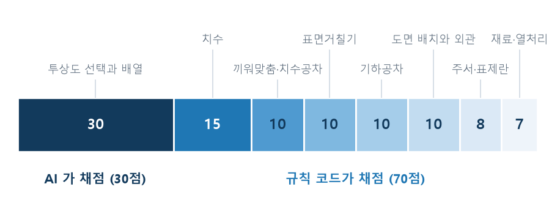
도면 배치와 외관 10점은 오랫동안 누락되어
만점이 90점이었고, 선 굵기·문자 크기와 같이 DXF에서 직접 판독되는 항목이 채점되지 않고 있었다.
현재는 8개 항목 전체가 반영되어 있다.분담 기준은 단 하나, "정답을 조건식으로 적을 수 있는가"이다.
투상도 항목 안에서도 좌표로 계산 가능한 것은 규칙으로 다시 판정한다. 제3각법 배치 (정면도 기준으로 평면도가 위, 우측면도가 오른쪽인지)는 뷰 좌표로 직접 판정하며, 투상도 개수 부족·중심선 누락·단면도 문자 표기 누락·척도 표기 누락도 규칙으로 검출한다. AI와 규칙이 같은 대상을 중복 확인하는 셈이나, AI 경로가 전부 불가한 상황에서도 이 부분은 계속 동작한다.
공개문제 채점 기준에서 오작으로 규정된 항목이다. 하나라도 해당하면 다른 점수와 무관하게 실격이므로, 점수 계산과 별도로 가장 먼저 판정하고 화면 최상단에 표시한다.
| # | 검사 코드 | 지적 내용 | 근거 |
|---|---|---|---|
| 1 | DQ_NO_SURFACE_SYMBOL | 부품도에 표면거칠기 기호가 하나도 없음 | KS B ISO 1302 표면 결 표시 · 채점 기준의 오작 조항 |
| 2 | DQ_NO_GEOMETRIC_TOL | 부품도에 기하공차 기호가 하나도 없음 | KS A ISO 1101 기하공차 · 채점 기준의 오작 조항 |
| 3 | DQ_NO_FIT | 끼워맞춤 공차 기호가 하나도 없음 | KS B 0401 치수공차와 끼워맞춤(ISO 286 계열) |
| 4 | DQ_PROJECTION | 요구된 제3각법이 아님 | KS B ISO 5456-2 · KS A ISO 128 투상법 |
| 5 | DQ_SHEET_SIZE | 도면 크기가 요구와 다름 | KS B ISO 5457 도면의 크기와 양식. 요구 도면 영역은 공개문제 기준 A2이며, A3는 출력 크기이므로 오작이 아니라 경고로 처리한다 |
| 6 | DQ_SCALE | 표준 척도가 아닌 값을 사용 | KS A ISO 5455 척도 |
공개된 수험자 유의사항의 오작 9가지 가운데 DXF로 판정할 수 있는 항목만 선정하였다. 판정할 수 없는 항목을 형식적으로 포함하지 않았다.
2026-09-08 상용화 가능 여부를 점검하는 과정에서, 실격 검사 5개 중 3개가 DXF에서는 애초에 조건이 성립할 수 없는 형태로 작성되어 있음을 확인하였다. 즉 해당 검사들은 존재하였으나 실제로는 동작하지 않았다. 판정 가능한 형태로 재작성하였고, 판정할 수 없는 항목은 억지로 포함하지 않고 제외하였다. 문제 대장 P19로 관리하였다.
실제 판정은 해당 회차의 공개문제와 감독위원 지시사항이 우선한다. 본 서비스의 오작 판정은 공개된 기준에 따른 참고 판정이며 공식 판정이 아니다.
| 구분 | 오작 판정 | 점수 판정 |
|---|---|---|
| 판정 시점 · 주체 | 채점 이전 · 규칙 전부 | 채점 시 · 규칙 70점 + AI 30점 |
| 결과의 성격 | 해당 시 점수와 무관하게 불합격 | 합계 60점 이상이면 합격 |
| 화면 위치 | 최상단 별도 영역 | 지적 목록 내 |
| AI 불가 시 | 정상 동작한다 | 투상도 30점이 공란이 된다 |
오작 판정을 전부 규칙으로 구성한 것은 의도적이다. 실격 여부가 AI의 가용성에 좌우되어서는 안 되기 때문이다.
요구 도면 영역은 A2이며, A3는 출력 크기이므로 오작이 아니라 경고로 처리한다. 이 구분이 없으면 A3로 출력한 정상 도면이 전부 실격으로 표시된다.
자동 검사 항목은 총 37종이며, 이 중 오작 판정 6종은 앞 절에 기재하였다.
각 항목은 KS 규격 또는 공개된 채점 기준에서 도출되었으며, 항목별 근거를 웹 화면
(/ks)에서도 공개한다.
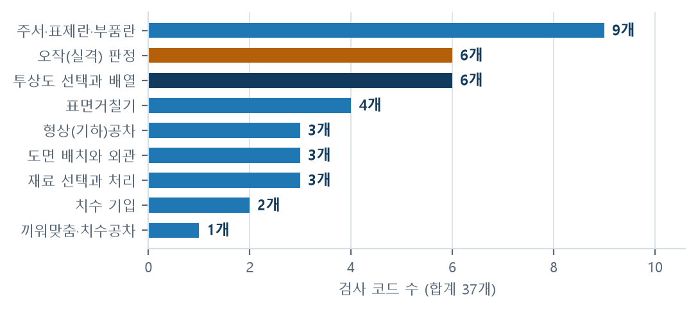
AI_PROJECTION)은 규칙으로 판정할 수 없어 AI에 위임한다.| 검사 코드 | 지적 내용 | 근거 |
|---|---|---|
| 치수 기입 — 15점 | ||
EX_NO_DIMS | 치수가 하나도 없음 | KS B ISO 129-1 치수 기입의 일반 원칙 |
EX_DIM_MISSING | 치수가 붙지 않은 원·구멍 | KS B ISO 129-1 — 형상을 규정하는 데 필요한 치수는 누락될 수 없음 |
| 끼워맞춤 공차 · 치수공차 — 10점 | ||
EX_TOL_FEW | 공차가 지정된 치수의 비율이 낮음 | KS B ISO 2768-1 일반공차 — 기능 치수는 개별 공차 필요 |
| 표면거칠기 — 10점 | ||
EX_SURFACE_EMPTY | 기호만 있고 거칠기 값이 없음 | KS B ISO 1302 — 기호에는 요구 값이 따라야 함 |
EX_SURFACE_UNIFORM | 모든 면이 같은 거칠기(다듬질 구분 없음) | KS B 0161 — 기능에 따라 다듬질 정도를 구분 |
EX_SURFACE_FEW | 가공면 대비 기호 수가 부족 | KS B ISO 1302 — 가공면에는 기호 기입 |
EX_NO_ROUGH_TABLE | 다듬질 구분을 정의하는 비교표가 없음 | 공단 규격 46번 주서(예) 7번 — √w = Ra 12.5 · √x = Ra 3.2 · √y = Ra 0.8 ·
√z = Ra 0.2. 괄호로 묶는 ISO 1302 방식도 인정 |
4-Ø6 기입 원칙).52-0.03^-0.05, Ø17js5)도
공차로 인정한다. 반면 R3·M10·(25)는 공차 대상이
아니므로 지적하지 않는다.| 구분 | 항목 수 | 성격 |
|---|---|---|
| 결함의 존재를 판정 | 14종 | "하나도 없음", "값이 비어 있음", "표기가 없음" 등. 판정이 명확하여 오지적 위험이 낮다 |
| 결함의 수량을 판정 | 6종 | "개수가 부족", "비율이 낮음" 등. 기준값을 정해야 하므로 판단이 들어간다. 실제 도면 검증에서 이들 항목에 정답을 부여하지 못한 이유이기도 하다 |
| 도면의 형태를 판정 | 11종 | 배치 · 척도 · 선 굵기 · 문자 크기 등. 기하 계산에 의존하므로 형태 가정이 틀리면 전부 실패한다 |
| 오작을 판정 | 6종 | 점수와 별도로 먼저 판정한다(제2절) |
| 계 | 37종 | 이 중 1종(AI_PROJECTION)만 AI가 판정한다 |
수량 판정 항목은 기준값의 타당성이 곧 검사의 타당성이 된다. 따라서 이들 항목은 공단 배포 규격과 채점 기준에서 근거를 직접 인용하고, 근거가 없는 기준값은 사용하지 않는다.
| 검사 코드 | 지적 내용 | 근거 |
|---|---|---|
| 형상(기하)공차 — 10점 | ||
EX_FCF_NO_DATUM | 기하공차에 데이텀 참조가 없음 | KS A ISO 5459 데이텀 — 자세·위치·흔들림 공차는 데이텀 필요 |
EX_FCF_NO_VALUE | 공차값이 비어 있음 | KS A ISO 1101 — 공차 기입틀은 기호·공차값·데이텀으로 구성 |
EX_FCF_FEW | 기하공차 개수가 부족 | 채점 기준의 기하공차 배점 |
| 주서 · 표제란 · 부품란 — 8점 | ||
EX_NO_NOTES | 주서가 없음 | KS B ISO 2768-1 — 일반공차는 도면에 명시해야 적용됨 |
EX_NOTE_ITEM | 주서에 일반공차·표면거칠기·모떼기 문구 누락 | KS B ISO 2768-1 · KS B ISO 13715 모서리 지시 |
EX_NO_TITLEBLOCK | 표제란·도면 양식이 없음 | KS A ISO 7200 표제란 항목 · KS B ISO 5457 도면 양식 |
EX_NO_SPEC_TABLE | 부품란에 기어·스프링이 있는데 요목표가 없음 | 공단 규격 49번 요목표(예) — 스퍼기어·베벨·헬리컬·웜과 웜휠·체인/스프로킷· 래크와 피니언·래칫 휠 |
EX_SHEET_SIZE | 도면 영역이 요구 크기(A2)와 다름 | KS A ISO 5457 제도 용지 · 공개문제 요구사항 "A2 용지에 제도" |
EX_NO_PROJECTION_MARK | 표제란에 각법 표기가 없음 | KS A ISO 128-30 투상법 — 도면에 투상법을 표시한다 |
EX_NO_SHEET_SCALE | 표제란에 척도 표기가 없음 | KS A ISO 5455 척도 · KS A ISO 7200 표제란 기재 항목 |
EX_SCALE_NOT_ONE | 부품도 척도가 1:1이 아님 | 공개문제 요구사항 — 부품도 척도 1:1(3D 등각투상도는 NS) |
EX_VIEW_SCALE_MIXED | 뷰마다 척도가 다름 | KS A ISO 5455 — 전체와 다른 척도는 그 뷰 옆에 표기. 확대·상세도는 예외 |
TOLERANCE 엔티티와 GDT 문자열에서 공차값과 데이텀을 해석한다.
실제 도면 23장에서는 전부 GDT 글꼴로 기입되어 있어 미검출 사례가 없었다.SCr415와 같이 소문자가 섞인 표기와 GCD 350-22와
같이 빈칸이 포함된 표기까지 인정한다(공단 규격 50번 기계재료 기호 예시).다듬질 방법 칸을
주서로 계수하여 실제 도면 1장에서 "주서 없음"을 검출하지 못한 사례가 있었다.규격 번호는 참고용이다. 시행 시점에 따라 개정판 번호가 다를 수 있으므로 실제 시험에서는 공개문제에 명시된 요구사항이 우선한다. 본 표의 규격 표기를 근거로 실제 시험의 판정을 다투어서는 안 된다.
이 배점 항목은 8점으로 비중이 크지 않으나 검사 코드는 9종으로 가장 많다. 확인 대상이 문자와 표제란 칸으로 구성되어 규칙으로 판정 가능한 항목이 많기 때문이다. 배점과 검사 코드 수는 비례하지 않는다.
| 배점 항목 | 배점 | 검사 코드 | 배점 대비 코드 수의 의미 |
|---|---|---|---|
| 주서·표제란·부품란 | 8점 | 9종 | 문자 기반이라 판정 가능한 항목이 많다 |
| 투상도 선택과 배열 | 30점 | 6종 | 배점이 가장 크나 규칙으로 판정 가능한 항목이 적다. 이 격차가 AI 도입의 직접적 사유이다 |
| 치수 기입 | 15점 | 2종 | 판정은 명확하나 항목 수가 적다. "도면 내 한 곳에만 기입" 원칙 때문에 뷰별 확인을 하지 않는다 |
1차 시행 기관이 배포한 실기시험용 KS 기계제도 규격 · 2차 KS 원문 및 ISO 계열 규격 · 최우선 해당 회차의 공개문제와 감독위원 지시사항. 본 표의 규격 표기는 참고용이다.
| 검사 코드 | 지적 내용 | 근거 |
|---|---|---|
| 도면 배치와 외관 — 10점 | ||
EX_LINEWEIGHT_FLAT | 외형선과 치수·중심선의 굵기 비가 2배 미만 | KS B 0001 / KS A ISO 128-20 — 가는 선 : 굵은 선 : 아주 굵은 선 = 1 : 2 : 4 |
EX_LINEWEIGHT_NONE | 레이어에 선 굵기도 없고 색으로 구분한 흔적도 없음 | 같음. 색으로 구분하고 출력 펜 설정으로 굵기를 내는 방식은 DXF에 굵기가 없어 판정하지 않는다 |
EX_TEXT_SIZE | 치수 문자가 2.5mm 미만이거나 KS 호칭 계열에 없는 크기 | KS A 0107 문자 크기 호칭(2.24·3.15·4.5·6.3·9)과 ISO 계열(2.5·3.5·5·7·10) · KS A ISO 3098 최소 높이 |
| 재료 선택과 처리 — 7점 | ||
EX_NO_MATERIAL | 표제란·부품란에 재료 기호가 없음 | 공단 규격 50번 기계재료 기호 예시(KS D) |
EX_NO_HEAT | 열처리·표면처리 지시가 없음 | KS D 재료 기호 및 열처리 표기 관행 · 채점 기준의 재료 항목 |
EX_NO_MASS | 3D 등각투상도 부품란 비고에 질량이 없음 | 공개문제 요구사항 — 질량을 g 단위로 소수점 첫째자리까지 기입 |
| 투상도 선택과 배열 — 30점 | ||
EX_FEW_VIEWS | 투상도 개수 부족 | KS A ISO 128-30 — 형상을 규정할 만큼의 투상도 필요 |
EX_NO_CENTERLINE | 원·대칭 형상에 중심선·중심마크 없음 | KS A ISO 128-20/24 — 가는 1점 쇄선 |
EX_LAYOUT_FIRST_ANGLE | 정면도에 줄이 맞는 투상도가 아래·왼쪽에만 있음 | KS A ISO 128-30 — 제3각법은 평면도가 위, 우측면도가 오른쪽 |
EX_VIEW_NO_LABEL | 단면도·상세도에 문자 표기 없음 | KS A ISO 128-40 단면 표시 · 128-34 부분 확대도 |
EX_VIEW_NO_SCALE | 전체 척도와 다른 뷰에 척도 표기 없음 | KS A ISO 5455 척도 |
AI_PROJECTION | 투상도 선택·배열 AI 판정(30점) | 채점 기준의 투상도 30점 항목. 규칙으로 판정할 수 없는 영역 |
투상도 6종 중 5종은 규칙이, 1종은 AI가 판정한다. 규칙 5종은 AI가 판정하는 범위와 일부 겹친다. 중복을 허용한 것은 AI 경로가 전부 불가한 상황에서도 최소한의 판정을 유지하기 위한 것이다.
| 확인 대상 | 규칙 판정 | AI 판정 | AI 불가 시 |
|---|---|---|---|
| 제3각법 배치 | 가능(뷰 좌표) | 가능 | 판정 유지 |
| 투상도 개수 부족 | 가능(뷰 경계) | 가능 | 판정 유지 |
| 중심선·중심마크 | 가능 | — | 판정 유지 |
| 단면도·상세도 문자 표기 | 가능 | — | 판정 유지 |
| 정면도 선정의 타당성 | 불가 | 가능 | 판정 불가 — 30점 공란 |
| 뷰 배치의 균형 | 불가 | 가능 | 판정 불가 — 30점 공란 |
표의 마지막 두 행이 규칙으로는 채점할 방법이 없는 영역이며, 배점이 가장 큰 항목이 여기에 해당한다.
순수 DXF는 뷰 경계를 알 수 없어 위 표의 첫 두 행도 판정하지 못한다. 이 경우 "0개"로 단정하지 않고 검사를 건너뛴다.
배점이 가장 큰 투상도 30점을 AI가 채점하므로, AI가 정지하면 채점의 3분의 1이 정지한다. 무료로 상시 운영하려면 한 제공자의 할당량이 소진되어도 서비스가 지속되어야 한다. 네 경로 모두 동일한 지시문과 동일한 응답 형식을 사용하므로, 어느 경로가 채점하더라도 결과 형식이 달라지지 않는다.
| 순위 | 제공자 | 모델 | 선정 사유 |
|---|---|---|---|
| 1 | Google Gemini | gemini-3.1-flash-lite |
무료 티어가 있고 이미지+문자 응답을 형식으로 강제할 수 있다. 실측에서 중앙값 3.2초로 검사 1회 목표(10초)에 부합한다 |
| 2 | Cloudflare Workers AI | @cf/meta/llama-4-scout-17b-16e-instruct |
이미 배포 기반으로 사용 중이어서 추가 가입 없이 대체 경로를 확보할 수 있다 |
| 3 | Mistral | mistral-small-latest |
유럽계 제공자를 포함하여 특정 지역의 장애·정책 변경으로 세 곳이 동시에 막히는 상황을 줄인다 |
| 4 | Groq | qwen/qwen3.6-27b |
추론 속도가 빨라 앞의 셋이 모두 불가한 상황에서도 대기 시간이 과도해지지 않는다 |
"정면도를 잘 골랐는가", "뷰가 균형 있게 배치되었는가"는 도면을 보아야 판단할 수 있으며 문자만 주고받는 모델로는 채점이 불가능하다. 따라서 네 경로 모두 이미지 입력이 가능한 모델로 한정하였다.
본 사업은 학생 8주 프로젝트이며 서버 비용을 팀이 직접 부담한다. 유료 API만 사용하면 검사 횟수에 비례하여 비용이 증가하여 상시 운영이 불가능하다.
severity · title · detail ·
fix · deduct 형식으로만 수신한다. 형식을 벗어난 내용이 화면에
표시되지 않는다.네 경로가 모두 불가하면 투상도 30점을 "사람 확인 필요"로 비우고 화면에 AI 비활성 상태를 표시한다. 규칙 70점과 오작 판정은 정상 동작하나, 배점이 가장 큰 항목이 빠진 상태이므로 없는 점수를 있는 것처럼 채우지 않는다.
2026-09-08까지 폴백 경로가 구성되어 있었으나 실제로 동작하지 않았다. 1순위가 오류로 응답하여도 다음 경로로 넘어가지 않았다. 즉 4중 구성의 의미가 없었다. 구성되어 있다는 사실과 동작한다는 사실은 다르다는 점을 확인한 사례이며, 오작 검사 3종이 성립 불가한 형태였던 사안(P19)과 같은 성격이다.
조치 후에는 1순위가 사용량 초과·시간초과·할당량 초과로 응답하면 다음 경로로 전환된다.
동일 도면에 동일 점수를 보장하는 응답 저장 역시 한 번도 적중하지 않던 기간이 있었다 (P21, 2026-09-08 조치). 조치 이전에는 같은 도면을 다시 검사할 때마다 외부 호출이 발생하였고, 점수도 매번 달라졌다. 편차 측정 결과를 해석할 때 이 시점을 구분하여야 한다.
1순위 모델은 사전에 고정한 것이 아니라 측정 후 교체하였다. 실제 수험생 도면 10장 (A01·A05·A08·A09·A13·A17·A21·A27·1본체·3축)에 동일한 지시문과 동일한 그림을 입력하여 2026-09-18에 측정하였다. 1회 채점을 40초까지 대기하였고, 실패는 실패로 계수하였다.
| 모델 | 호출 | 실패 | 중앙값 | 최대 | 기준 모델과 점수 차 | 감점 0 비율 |
|---|---|---|---|---|---|---|
gemini-3.6-flash(당시 1순위) |
20 | 18 | 7.4초 | 40초 시간초과 | 2.0점 (n=2) | 0 / 2 |
gemini-3.5-flash | 10 | 1 | 14.3초 | 28.0초 | 기준 | 1 / 9 |
gemini-3.1-flash-lite(교체 후 1순위) |
30 | 4 | 3.2초 | 5.9초 | 2.7점 | 11 / 26 |
gemini-3.1-flash-lite · thinking low | 10 | 1 | 2.8초 | 3.9초 | 3.4점 | 5 / 9 |
gemini-3.5-flash-lite | 20 | 0 | 2.1초 | 15.5초 | 4.6점 | 20 / 20 |
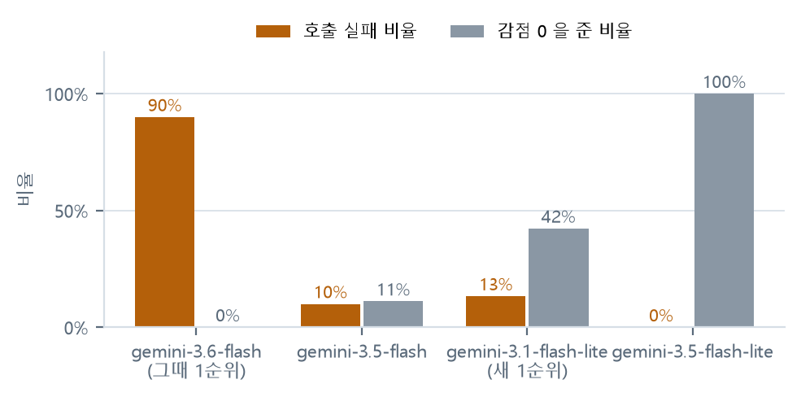
gemini-3.5-flash-lite는 20회 전부
감점 0을 부여하여 무엇을 입력하든 만점을 주는 상태였으므로 채택하지 않았다.503 사용량 폭주, 40초 시간초과, 무료 한도 초과), 성공한 호출도 7~8초가
소요되었다. 측정하기 전까지 이 사실을 알지 못하였다.본 측정은 실제 수험생 도면으로 수행하였다. 자체 제작 도면으로 측정하였다면 실패율과 응답 시간이 실제와 다르게 나왔을 가능성이 있다. 표본의 성격이 측정 결과를 좌우한다는 점은 정확도 검증(제6장)과 동일하다.
| 항목 | 설정 |
|---|---|
| 표본 | 실제 수험생 도면 10장(A01·A05·A08·A09·A13·A17·A21·A27·1본체·3축) |
| 입력 조건 | 모델마다 동일한 지시문과 동일한 그림을 사용 |
| 대기 시간 | 1회 채점을 40초까지 대기 |
| 실패 처리 | 실패를 실패로 계수한다 |
| 제외 항목 | AI 판정의 정확도는 측정하지 않았다. 실행마다 결과가 달라져 정답과 대조할 수 없기 때문이다(제6장 제1절) |
순서가 중요하다. 속도를 1순위로 두었다면 20회 전부 감점 0을 부여한 모델이 선정되었을 것이다.
제도 기본에 어긋나거나 도면만으로 판정할 수 없는 항목은 의도적으로 채점하지 않는다. 채점하지 않는 사실과 그 사유를 함께 공개한다.
| 비채점 항목 | 사유 |
|---|---|
| 뷰마다 치수가 기입되었는지 | KS B 0001은 "하나의 치수는 도면 내 단 한 곳에만 기입한다"가 기본이며, 치수는 주 투상도(정면도)에 모으도록 한다. 우측면도에 치수가 없어도 그 형상의 치수가 정면도에 있으면 기입한 것이다. 이를 몰라 한동안 정상 도면에 감점을 부여하고 있었다. |
| 윤곽선 밖에 남은 요소 | 채점은 도면 영역 안에서 이루어지고 틀 밖은 제출물의 일부가 아니다. 과거 감점 대상에 포함하였다가 제외하였다. |
| 색으로 선 굵기를 구분한 도면의 굵기 | 출력 펜 설정으로 굵기를 구현하는 방식이라 DXF에 굵기 값이 없으며, "굵기를 지정하지 않았다"와 구별할 수 없다. 구별할 수 없는 사항을 감점하면 정직한 채점이 아니다. |
| 각 부품의 균형 배치(5점) | 치우침을 수치로 측정한 결과 표제란이 우측 하단을 점유하여 정상 도면이 전부 좌측으로 치우친 것으로 산출되었다(실제 도면 30장, x −0.10 ~ −0.31). 정상과 불량이 구분되지 않으므로 규칙을 만들지 않고 해당 5점을 투상도 AI 판정에 포함하였다. |
| 프린터 설정으로 인한 출력 잘림 | 인쇄 단계에서 발생하는 사안으로 DXF 안에 해당 정보가 없다. 면담에서 제기된 요구이나 검출이 원천적으로 불가능하므로 범위 밖으로 분류하고 그 사실을 공표한다. |
| AI 판정 결과의 정확도 측정 | AI 판정은 실행할 때마다 결과가 달라질 수 있으므로 정확도 측정에서 제외하고 규칙 기반 검사만 측정한다(제6장 제1절). |
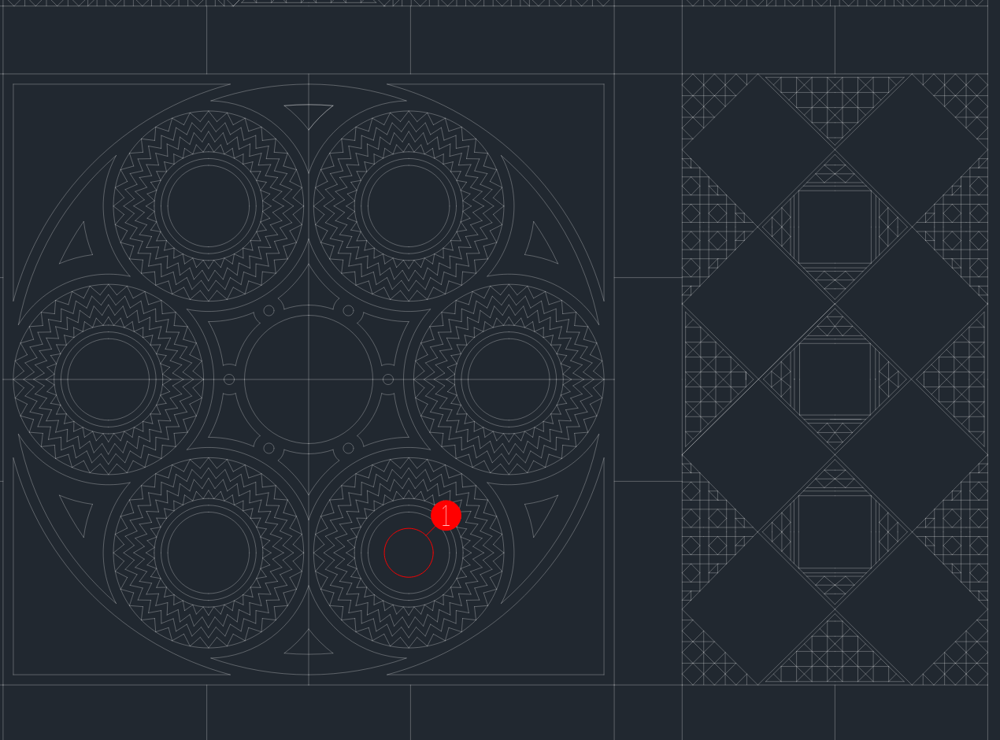
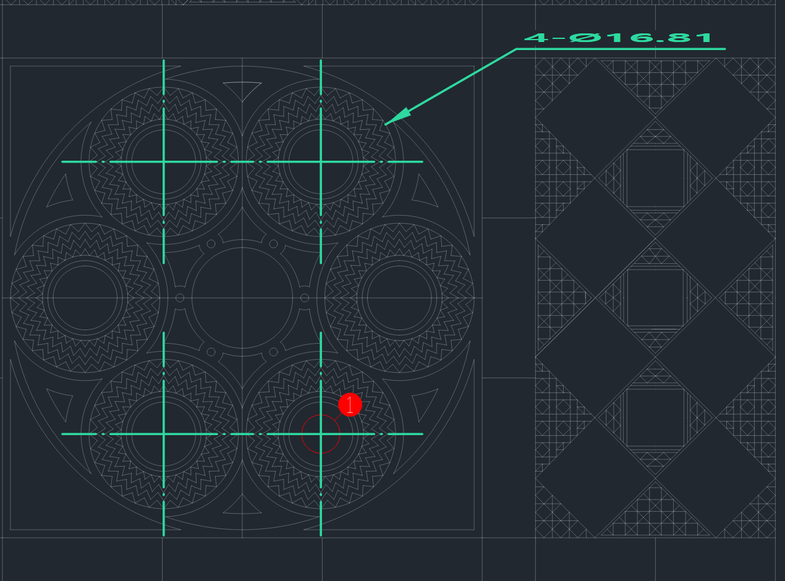
4-Ø16.81로
묶어 한 번만 기입하고 중심 마크 4개를 겹쳐 표시하였다.표면거칠기 기호 · 기하공차 · 끼워맞춤은 작도하지 않는다. 어느 면과 어느 치수에 기입할지가 설계 판단이기 때문이다. 값을 대신 결정해 주면 그 도면은 더 이상 이용자의 도면이 아니며, 잘못 기입되었을 때 책임 소재도 불분명해진다. 이들 항목은 누락 사실과 필요 사유만 제시하고 값은 이용자가 정하도록 둔다.
채점하지 않기로 한 항목은 결정 시점과 사유를 함께 기록한다. 기록하지 않으면 이후 "왜 이 항목은 검사하지 않는가"라는 질문에 답할 수 없고, 동일한 항목을 다시 추가하려는 시도가 반복된다.
| 항목 | 결정 성격 | 재검토 조건 |
|---|---|---|
| 뷰별 치수 확인 | 규격 해석 정정 | 재검토하지 않는다. KS 원칙에 반하는 검사였다 |
| 윤곽선 밖 요소 | 채점 범위 정정 | 재검토하지 않는다 |
| 색으로 굵기를 준 도면 | 판정 불가 | DXF에 굵기 정보가 포함되는 경우에만 가능하다. 사실상 재검토 대상이 아니다 |
| 각 부품의 균형 배치 | 측정 결과에 따른 이관 | 정상과 불량을 구분하는 지표를 찾으면 재검토한다. 현재는 표제란의 위치 때문에 정상 도면이 전부 치우친 것으로 산출된다 |
| 출력 잘림 | 범위 밖 | 도면 파일에 정보가 없으므로 재검토 대상이 아니다 |
치수 문자를 임의 위치에 배치하면 기존 선과 문자를 덮어 오히려 판독이 어려워진다. 따라서 서버가 미리보기를 실제로 그려 본 뒤 배치를 결정한다. 지시선은 원 중심을 향하는 사선으로 긋고 화살표를 원 둘레에 대며, 문자는 치수끼리·번호 표시와 겹치지 않고 윤곽선 안에서 기존 요소를 가장 적게 덮는 위치에 놓는다. 중심선은 가는 1점 쇄선으로 외형선 밖 3mm까지 긋고, 이웃한 원과 겹치면 두 중심 사이에서 끊는다. 숨은선으로만 작도된 원에는 치수를 넣지 않고, 그 형상이 보이는 뷰에 기입하도록 안내한다.
정답을 사전에 부여한 도면으로 측정한다. "치수를 의도적으로 누락시킨 도면"을 입력하고 그것을 정확히 검출하는지 확인하는 방식이다. 자체 제작 도면과 제3자 도면의 두 수치를 나란히 제시하며, 두 값이 다르면 제3자 도면 쪽을 실제 성능으로 본다.
| 지표 | 정의 | 낮을 때의 문제 |
|---|---|---|
| 검출률 (recall) |
도면에 실제로 있는 결함 중 검사기가 검출한 비율 | 수험생이 놓친 것을 그대로 놓친다 |
| 정확도 (precision) |
검사기가 지적한 것 중 실제 결함인 비율 | 정상 도면을 결함으로 지적하여 혼란을 준다. 둘 중 이쪽이 더 위험하다 |
| 완전 일치 | 한 도면의 지적 목록이 정답과 정확히 같은 경우의 수 | 부분 정답을 후하게 계수하지 않기 위해 함께 기록한다 |
AI 판정(투상도 30점)은 측정에서 제외하고 규칙 기반 검사만 측정한다. AI 판정은 실행할 때마다 결과가 달라질 수 있어, 같은 기준으로 정답과 대조할 수 없기 때문이다. AI의 편차는 별도 항목으로 측정한다(제6절).
| 표본 | 수량 | 제작 주체 | 성격 |
|---|---|---|---|
| 기준 도면 | 25장 | 자체 제작 | 결함을 하나씩 의도적으로 삽입. 정상 도면도 포함하여 오지적 여부를 확인 |
| 합성 도면 | 100장 | 자체 제작 | 생성 코드로 결함 조합을 대량 생성 |
| 실제 수험생 도면 | 23장 | 제3자(학생) | 기계과 학생에게 제공받은 Inventor 도면을 DXF로 변환한 것. 의미 있는 수치는 이 표본에서 나온다 |
python bench.py
python bench.py 합성도면/labels.json
python bench.py 실제도면/labels.json --only DQ_NO_SURFACE_SYMBOL,DQ_NO_GEOMETRIC_TOL,
EX_NO_DIMS,EX_NO_NOTES,EX_NO_TITLEBLOCK,EX_NO_CENTERLINE
실제 도면은 --only 옵션으로 정답을 부여한 6개 항목만 대조한다.
전체 항목을 대조하면 정답이 없는 항목까지 오답으로 계수되어 측정이 왜곡되기 때문이다.
| 구분 | 기준 도면 25장 | 합성 도면 100장 | 실제 도면 23장 |
|---|---|---|---|
| 완전 일치 | 25장 (100%) | 100장 (100%) | 23장 (100%) |
| 검출률(recall) | 100% (23/23) | 100% (105/105) | 100% (63/63) |
| 정확도(precision) | 100% (23/23) | 100% (105/105) | 100% (63/63) |
| 측정한 검사 항목 | 전 항목 | 전 항목 | 6개 항목 |
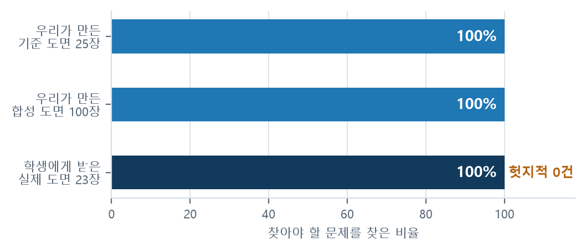
| 구분 | 기준 도면 28장 | 합성 도면 100장 | 실제 도면 23장 |
|---|---|---|---|
| 완전 일치 | 28장 (100%) | 100장 (100%) | 23장 (100%) |
| 검출률 | 100% (27/27) | 100% (99/99) | 100% (63/63) |
| 정확도 | 100% (27/27) | 100% (99/99) | 100% (63/63) |
재측정을 처음 실행하였을 때 합성 도면은 완전 일치 94장, 검출률 94.3%
(105건 중 99건)였다. 미검출 6건은 전부 EX_TOL_FEW 항목이었다.
규칙이 틀린 것이 아니라 정답 파일이 옛 규칙에 머물러 있었다. 2026-09-12에
KS B ISO 2768-1에 맞추어 "주서에 일반공차가 선언되어 있으면 공차 개수를 문제 삼지 않는다"로
변경하였는데, 합성 도면은 전부 주서에 해당 문구가 포함되어 있었다. 그때 검사 도구 내부의
기준 도면 정답은 수정하였으나 생성 코드의 정답표와 합성 도면 정답 파일은 수정하지
않았다. 두 곳에서 해당 항목을 제외하고 재측정하였다.
그 나흘 동안 홈 화면에는 "검출률 100%"가 게시되어 있었으나 당시 코드로 측정하면 94.3%였다. 자동 점검은 기준 도면 28장만 확인하고 기준선도 90%였으므로 이 상황을 검출하지 못하였다. 공표 수치와 실제 수치가 달랐던 기간이 있었다는 사실을 그대로 기록한다.
자체 제작 도면만으로 측정한 정확도는 도면을 만든 주체와 규칙을 만든 주체가 같다는 문제를 피할 수 없다. 따라서 제3자 도면 확보를 향후 계획의 1순위로 두고, 문제 대장에도 P04로 등재하여 관리하였다.
| 일자 | 내용 | 결과 |
|---|---|---|
| 2026-09-06 | Inventor 도면 32장 변환 시도 | 0 / 32 실패 |
| 2026-09-11 | Inventor 2027 설치 후 재시도 | 30 / 32 성공 · 중복 7쌍 제외 시 서로 다른 23장 |
37개 검사 중 6개 항목에만 정답을 부여하였다. 도면 그림만으로 확실히 판별할 수 있는 항목(기호 유무 · 치수 유무 · 주서 유무 · 표제란 유무)으로 한정하였으며, 개수를 세어야 하는 항목은 그림만으로 정답을 부여할 수 없어 제외하였다.
| 검사 코드 | 확인 내용 |
|---|---|
DQ_NO_SURFACE_SYMBOL | 표면거칠기 기호의 존재 여부 |
DQ_NO_GEOMETRIC_TOL | 기하공차 기호의 존재 여부 |
EX_NO_DIMS | 치수의 존재 여부 |
EX_NO_NOTES | 주서의 존재 여부 |
EX_NO_TITLEBLOCK | 표제란·도면 양식의 존재 여부 |
EX_NO_CENTERLINE | 중심선·중심마크의 존재 여부 |
실제 도면 23장이 입력되면서 자체 제작 도면에서는 드러나지 않던 결함 세 가지가 확인되었다. 이 가운데 하나는 AI 입력 자체의 결함이었다.
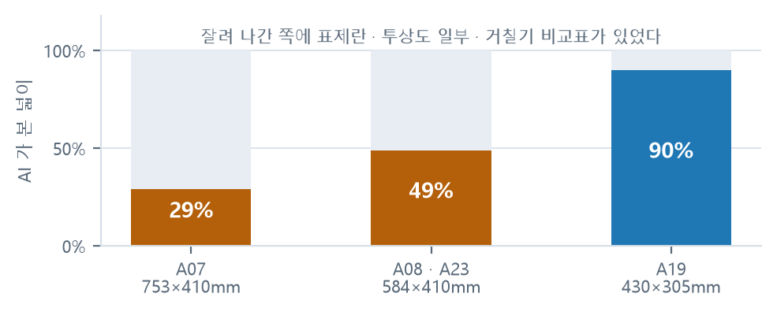
| 도면 | 실제 크기 | AI가 받은 그림 | AI가 본 넓이 |
|---|---|---|---|
| A08 · A23 | 584 × 410 mm | 406 × 287 mm | 49% |
| A19 | 430 × 305 mm | 406 × 290 mm | 90% |
| A07 | 753 × 410 mm | 406 × 224 mm | 29% |
조치 — 자르지 않는 방식으로 변경하였다. 페이지를 도면 전체로 두고 픽셀이 초과하면 해상도를 낮춘다. A2 도면은 102 DPI로 594×420mm 전체가 입력되고, 작은 도면은 150 DPI를 유지한다.
| 결함 | 영향 | 조치 |
|---|---|---|
| 윤곽선을 선 4개로 인식하지 못함 | 모든 도면에 "표제란·도면양식 없음"이 표시되고 도면 크기 판정이 수행되지 않았다 | 2026-09-11 조치 30장 중 28장 인식 |
| 뷰 이름표를 주서로 계수 | 주서가 없는 도면 8장에서 "주서 없음"을 검출하지 못하였다 | 계수 대상에서 제외 |
두 결함 모두 자체 제작 도면에서는 드러나지 않았다. 자체 제작 도면은 윤곽선을 닫힌 사각형으로 작도하였고 뷰 이름표를 사용하지 않았기 때문이다. 표본이 검증의 성격을 결정한다는 점을 보여 주는 사례이다.
본 절은 검증 결과의 신뢰 범위를 스스로 제한하기 위한 것이다. 아래 한계를 감안하지 않은 채 "정확도 100%"만 인용하는 것은 사실을 왜곡하는 것이다.
실제 도면 23장은 동일한 학생에게 제공받은 것이다. 그중 20장이 표면거칠기 기호도 기하공차도 없는 작업 중간 상태였고, 23장 전부에 주서가 없었다.
따라서 실질적으로 측정된 것은 "없는 것을 없다고 판정하는가"이며, "있는 것을 있다고 판정하는가"는 기호가 포함된 3장에서만 확인되었다. 제품이 실제로 마주할 완성 도면에서의 성능은 아직 측정되지 않았다.
도면 그림만으로 확실히 판별할 수 있는 항목으로 한정하였다. 개수를 세어야 하는 항목 (예: 공차 지정 치수의 비율, 거칠기 기호 수의 적정성)은 그림만으로 정답을 부여할 수 없어 제외하였다. 즉 나머지 31개 항목은 실제 도면으로 검증되지 않았다.
정답을 부여한 사람은 수험생 본인도 채점 교사도 아니다. 판별이 쉬운 항목으로 한정하였으므로 오류 가능성은 낮으나, 전문가의 라벨링과 동등하다고 볼 수 없다.
AI 점수 편차 측정에 사용한 표본 중 하나(sample_075em07z.dwg)는 기계 부품
도면이 아니라 무늬가 반복되는 도면이었다. 그림을 열어 보고서야 확인하였다. 따라서
"투상도가 없다"는 판정 자체는 틀리지 않았을 수 있으며, 편차 측정을 실제 수험생 도면으로
다시 수행하여야 한다. 표본이 잘못되면 측정도 잘못된다.
/accuracy)에 동일한 한계를 함께 공개하고 있다.
수치만 게시하고 한계를 숨기지 않는다.본 절의 한계를 해소하기 위한 과제는 향후 계획의 1순위로 등재되어 있다. ① 여러 학생의 완성 도면으로 재측정, ② 교사가 채점한 도면을 확보하여 전 항목 정답 부여. 두 과제가 완료되기 전까지는 본 절의 한계 표기를 유지한다.
측정 수치만 게시하고 한계를 기재하지 않으면, 이용자는 37개 항목 전부가 완성 도면에서 검증되었다고 오인한다. 실제로는 6개 항목이 작업 중간 상태의 도면에서 검증되었다. 오인한 이용자는 본 서비스를 통과한 것을 "제출 가능한 상태"로 해석할 수 있으며, 이는 학습용 도구가 만들 수 있는 가장 나쁜 결과이다.
| 게시 위치 | 표기 내용 |
|---|---|
| 웹 정확도 화면 | 측정 수치 · 표본 성격 · 측정 항목 수 · 미검출 항목을 함께 게시 |
| 정확도 문서 | 일자별 재측정 이력과 그때마다 확인된 결함을 보존 |
| 본 보고서 | 한계를 결과 뒤가 아니라 해당 장의 별도 절로 배치하였다 |
한계 표기는 해소될 때까지 유지한다. 여러 학생의 완성 도면으로 재측정이 완료되면 그 시점에 본 절의 내용을 갱신한다.
제4장 제3절에서 구분한 세 가지 범주에 따라 기재한다. 개선 가능한 것과 개선 불가능한 것을 뭉뚱그리지 않는다.
| 항목 | 현재 판독 방식 | 실제 도면에서의 영향 |
|---|---|---|
| 선으로만 작도한 표면거칠기 기호 | 기호 문자로 인식 | 실제 도면 23장에서는 학생이 √를 선으로 작도하면서 다듬질 문자(w·x·y·z)를 항상 함께 기입하여 미검출 사례가 없었다. 문자를 기입하지 않는 도면이 입력되면 필요하다 |
| 직접 작도한 기하공차 기입틀 | TOLERANCE 엔티티와 GDT 문자열로 인식 |
실제 도면 23장에서는 전부 GDT 글꼴로 기입되어 있어 미검출 사례가 없었다 |
| 표준 명칭이 아닌 중심선 레이어 | 레이어·선종류 이름으로 인식 | 이름이 CENTER 계열이 아니면 계수하지 못한다 |
| 요목표 | 판독하지 않음 | 스퍼기어 요목표의 다듬질 방법 칸을 주서로 계수하여 실제 도면 1장에서
"주서 없음"을 검출하지 못하였다 |
| 항목 | 사유 |
|---|---|
| 색으로 굵기를 구분한 도면의 선 굵기 |
출력 펜 설정으로 굵기를 구현하여 DXF에 굵기 값이 없다. "굵기 미지정"과 구별 불가 |
| 순수 DXF의 투상도 개수·배치 | 뷰 경계를 알 수 없다. "0개"로 단정하지 않고 검사를 생략 |
| 항목 | 사유와 처리 |
|---|---|
| 프린터 설정으로 인한 출력 축소·잘림 |
인쇄 단계의 사안이다. 면담 2건에서 요구가 제기되었으나 검출이 원천적으로 불가능하므로 범위 밖으로 분류하고 그 사실을 공표한다 |
| 파일 손상 · 저장 실패 | CAD 도구의 사안으로 도면 파일 안에 정보가 없다 |
| 구분 | 항목 수 | 조치 가능성 | 계획 |
|---|---|---|---|
| 미검출 | 4 | 기술로 해결 가능 | 향후 계획 3순위로 등재. 판독 방식을 보완한다 |
| 판정 제외 | 2 | 해결 불가 | 조치하지 않는다. 억지로 판정하면 정상 도면을 감점하게 된다 |
| 범위 밖 | 2 | 해결 불가 | "검출하지 않는다"고 명시한다 |
미검출 4건 중 실제 도면에서 실제로 누락이 발생한 것은 요목표 판독 1건이다. 나머지 3건은 현 표본에서 누락 사례가 없었다. 따라서 조치 우선순위는 실제 발생 여부를 기준으로 한다.
투상도 30점은 AI가 채점하므로 같은 도면이라도 실행할 때마다 점수가 달라진다. "달라진다"는 사실은 인지하고 있었으나 몇 점이 달라지는지 측정한 적이 없었다. 따라서 측정 도구를 먼저 제작하고 수치를 기록하였다. 측정 도구는 캐시를 우회하여 매번 새로 질의한다(캐시를 사용하면 편차가 0으로 나타난다).
| 도면 | 5회 점수 | 폭 | 표준편차 |
|---|---|---|---|
sample_plate.dxf | 18, 18, 20, 20, 20 | 2점 | 1.10점 |
sample_autocad.dxf | 18, 18, 18, 18, 18 | 0점 | 0.00점 |
sample_075em07z.dwg | 0, 18, 18, 18, 18 | 18점 | 8.05점 |
sample_075em07z.dwg는 선이 6,373개 포함된 실제 도면인데 AI는 5회 모두
"투상도가 하나도 없다"고 응답하였다. AI에 전달한 그림을 저장하여 확인한 결과
201바이트의 빈 그림이었다. AI는 도면이 아니라 백지를 채점하고 있었다.
원인은 도면 단위였다. 해당 파일의 도면 범위가 약 0.12×0.12였고 이를 밀리미터로
간주하여 페이지를 생성하였으므로, 여백만 남아 그림이 들어갈 자리가 없었다.
즉 위 표의 18점 편차는 AI가 흔들린 결과가 아니라 백지를 보고 몇 점을 감점할지 판단한
결과였다. sample_autocad.dxf가 5회 모두 18점으로 편차 0을 기록한 것도
채점이 안정적이어서가 아니라 매번 같은 백지를 보았기 때문이었다.
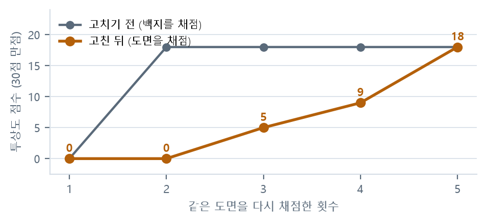
sample_075em07z.dwg, 5회).
편차는 줄지 않았다. 오히려 점수 중앙값이 18점에서 5점으로 하락하였고, 지적 건수도
1건에서 1~3건으로 흔들리기 시작하였다.| 구분 | 조치 전 | 조치 후 |
|---|---|---|
| 점수 | 0, 18, 18, 18, 18 | 0, 0, 5, 9, 18 |
| 폭 | 18점 | 18점 |
| 표준편차 | 8.05점 | 7.50점 |
| 지적 수 | 매회 1건 | 1~3건 |
편차의 원인은 백지가 아니라 지시문과 모델 쪽이었다. 백지 렌더링은 그것대로 반드시 조치해야 할 결함이었으나 편차 문제는 별도로 남아 있으며, 문제 대장 P02로 현재까지 미해결 상태로 관리한다.
코드를 변경할 때마다 자동 시험이 실행된다. 검사 규칙을 변경하였는데 기준 도면의 결과가 달라지면 그 시점에 드러난다.
| 시험 대상 | 확인 내용 |
|---|---|
| 검사 규칙 | 합성 기준 도면은 지적 0건이 정상이며, 결함을 하나 삽입하면 그 항목만 검출되어야 한다 |
| 공식 규격 예시 | 공단 배포 규격의 예시를 그대로 통과시키는지 확인한다 |
| 계측 이벤트 | 방문·검사·완료·재검사·코호트가 실제로 집계되는지 확인한다. 이 시험이 실패하면 북극성 지표가 영구히 0이 된다 |
| 비인적 접속 제외 | 검색 엔진·미리보기 생성기·스크립트·빈 에이전트가 집계되지 않는지 확인한다 |
| 개인정보 | 저장 파일에 IP 원본 문자열이 남지 않는지 실제 파일을 읽어 확인한다 |
| 업로드 정리 | 요청이 한 번도 없는 상태에서도 1시간 경과 폴더가 삭제되는지 확인한다 |
| 속도 제한 | 단시간에 과다 요청이 발생하면 차단되는지 확인한다 |
합성 기준 도면 시험에서 검출한 오지적 3건은 실제로 발생하였던 사안이다.
제2절에 기재한 바와 같이, 합성 도면의 검출률이 94.3%로 하락한 나흘 동안 자동 점검은 이를 검출하지 못하였다. 점검 대상이 기준 도면 28장뿐이었고 기준선도 90% 였기 때문이다. 시험이 존재한다는 사실과 시험이 유효하다는 사실은 다르다.
교훈 — 점검 대상에 합성 도면과 실제 도면을 포함하고, 기준선을 실제 달성 수준에 맞추어 올려야 한다. 이는 향후 과제로 등재되어 있다.
문제를 해결하고 나면 그러한 문제가 있었다는 사실 자체를 잊는다. 그 결과 동일한 문제가 재발하거나, 대외 설명 시 "무엇을 어떻게 알아냈는가"를 제시하지 못하게 된다. 따라서 발생 시점에 즉시 기록하고, 해결 여부와 무관하게 보존한다.
실제로 발생한 사안만 등록한다. 그날 아무 문제도 없었으면 아무것도 적지 않는다. 기록을 채우기 위하여 "개선하면 좋을 점"과 같은 것을 문제로 올리지 않는다. 지어낸 항목이 하나라도 섞이면 나머지 기록의 신뢰도도 함께 상실된다. 빈 주가 있는 것이 정상이며, 그것이 이 기록이 사실이라는 증거이다.
문제에 해당하는 것 — 실제로 틀린 결과가 나왔다,
하려던 것이 되지 않았다, 시간이 계획보다 크게 초과되었다, 연락이나 자료가 없어 진행이 막혔다.
문제에 해당하지 않는 것 — 아직 만들지 않은 기능, 다음에 하기로 한 일, 잘 되었으나 더
잘하고 싶은 것. 이들은 향후 계획에 기재한다.
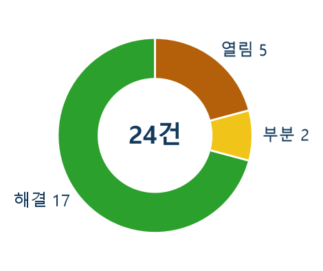
| 처리 상태 | 건수 | 비고 |
|---|---|---|
| 해결 | 17건 | 원인 특정 후 조치 완료 |
| 부분 해결 | 2건 | 일부 조치, 잔여 사항 관리 중 |
| 미해결 | 5건 | 원인 또는 해결 수단 미확보 |
| 계 | 24건 | 한 건당 문서 1개로 관리 |
기록 항목은 ① 증상 ② 처음 확인한 날 ③ 영향 범위 ④ 원인 ⑤ 조치 ⑥ 재발 방지 수단이다. 미해결 항목은 해결될 때까지 상태를 유지하며, 해결된 것처럼 표기하지 않는다.
| 번호 | 문제 | 상태 | 확인일 | 영향 |
|---|---|---|---|---|
| P01 | 단위가 밀리미터가 아닌 도면이 백지로 렌더링된다 | 해결 | 08-22 | AI 채점 30점 전부 |
| P02 | 같은 도면인데 AI 점수가 매번 달라진다 | 미해결 | 08-22 | AI 채점 30점 |
| P03 | 같은 판정인데 지적 제목이 매번 다르게 표기된다 | 해결 | 08-22 | 이용자 화면 · 재검사 비교 |
| P04 | 측정에 사용하는 표본이 실제 시험 도면이 아니다 | 미해결 | 08-22 | 정확도 · 편차 측정 전부 |
| P05 | 제출처를 잘못 파악하여 안내를 이틀 늦게 확인하였다 | 해결 | 08-22 | 산출물 제출 경로 전체 |
| P14 | 도면 요소를 다른 것으로 오인한다 | 해결 | — | 오작 판정 |
| P15 | 업로드 정리가 새 요청이 있을 때만 실행된다 | 해결 | 09-01 | 개인정보 보관 기간 |
| P19 | 실격 검사 5개 중 3개가 DXF에서 성립할 수 없었다 | 해결 | 09-08 | 오작 판정 |
| P20 | AI 채점기를 넷 구성하고 하나만 사용하고 있었다 | 해결 | 09-08 | AI 가용성 |
| P21 | 같은 도면인데 캐시가 한 번도 적중하지 않았다 | 해결 | 09-08 | 점수 일관성 · 호출 비용 |
| P23 | 답변·번역 생성이 채점보다 오래 걸린다 | 해결 | — | 검사 소요 시간 |
| 증상 | AI 점수가 도면 내용과 무관하게 흔들렸다. 특정 도면은 5회 모두 "투상도가 하나도 없다"고 판정되었다 |
|---|---|
| 원인 | 단위가 밀리미터가 아닌 도면을 그림으로 변환할 때 배율 계산이 잘못되어 아무것도 그려지지 않은 201바이트 빈 그림이 전달되었다 |
| 조치 | 도면 단위를 밀리미터로 환산하여 그리도록 변경(2026-08-22). 그림 크기가 201바이트 → 283,550바이트로 변화하였다 |
| 재발 방지 | AI에 실제로 전달한 그림을 저장하여 육안으로 확인하는 절차를 도입 |
| 부수 확인 | 편차 0으로 안정적으로 보이던 다른 도면도 매번 같은 백지를 보고 있었던 것으로 확인되었다. "안정적"이라는 지표가 오히려 결함의 징후였다 |
| 증상 | 실제 학생 도면이 입력되자 투상도 점수가 비정상적으로 산출되었다 |
|---|---|
| 원인 | 채점용 그림의 페이지를 406mm로 제한하고 있었는데, 이 제한은 축소가 아니라 초과분을 잘라내는 방식이었다. 요구 도면 영역인 A2가 594mm여서 실제 도면이 전부 해당되었다. AI가 받은 그림은 도면 넓이의 29~51%였고 잘려 나간 쪽에 표제란과 투상도 일부가 있었다 |
| 조치 | 자르지 않고 해상도를 낮추는 방식으로 변경(2026-09-11) |
| 교훈 | P01에서 "AI가 백지를 본다"를 조치하였으나, 같은 위치에 절반짜리 결함이 남아 있었다. 한 번 조치한 지점을 다시 확인하지 않으면 유사 결함이 잔존할 수 있다 |
| 증상 | 상용화 가능 여부를 점검하던 중 확인(2026-09-08) |
|---|---|
| 원인 | 실격 검사 5개 중 3개가 DXF에서는 조건이 성립할 수 없는 형태로 작성되어 있었다. 즉 해당 검사는 존재하였으나 실제로는 동작하지 않았다 |
| 조치 | 판정 가능한 형태로 재작성하고, 판정할 수 없는 항목은 억지로 포함하지 않고 제외하였다 |
| 교훈 | 검사가 존재한다는 사실과 동작한다는 사실은 다르다. 동작 여부를 확인하는 시험이 필요하다 |
P02(AI 점수 편차) — 백지 렌더링을 조치한 뒤 재측정하였으나 표준편차가 8.05점에서 7.50점으로 줄었을 뿐 폭은 18점으로 동일하였다. 조치하였다고 하여 해결로 표기하지 않는다. 또한 지금까지 측정한 편차는 잘린 그림으로 측정한 것이므로 재측정이 필요하다. 다만 "편차의 원인이 이것 때문"이라고 미리 단정하지 않는다 — P01 때 동일한 추정을 하였다가 틀렸기 때문이다.
P04(표본 대표성) — 실제 도면 23장을 확보하여 일부 진전이 있었으나, 표본이 한 학생의 것이고 20장이 작업 중간 상태이므로 해결로 볼 수 없다. 여러 학생의 완성 도면을 확보하기 전까지 미해결로 유지한다.
방문자마다 서버만 아는 임의값 + 해당 주차 + IP를 해시한 16자만 보관한다.
IP 원본은 저장하지 않으며, 주차가 바뀌면 동일인도 다른 값이 되므로 주를 넘겨 추적할 수
없다. 집계 항목은 날짜 · 방문자 값 · 종류 · 횟수 네 가지뿐이다.
| 단계 | 이벤트 | 집계 시점 |
|---|---|---|
| 방문 | visit |
검사 화면을 열었을 때. 안내 화면은 집계하지 않는다 — 한 사람이 화면을 이동할 때마다 계수하면 방문 수가 부풀기 때문 |
| 파일 선택 | pick |
파일 선택창을 열었을 때(2026-09-25 추가) |
| 검사 시작 | check · sample |
도면 파일을 업로드하였거나 예제 도면을 실행하였을 때 |
| 결과 확인 | done |
검사가 예외 없이 종료되어 결과가 반환되었을 때 |
| 재검사 | recheck |
동일 파일의 지난 결과와의 비교가 표시되었을 때. 북극성 지표의 입력 지점 |
| 코호트 | new · ret:처음온주 |
주를 넘어 재방문하는지 확인(2026-09-24 추가) |
검색 엔진 수집기, 링크 미리보기 생성기, 상태 점검 도구, 스크립트에 의한 접속은 이용자 에이전트 문자열을 기준으로 집계에서 제외한다(2026-09-23 적용). 집계 지점이 한 곳이므로 6종 이벤트 전부에 동일하게 적용된다.
다만 적용 이전의 기록은 소급하여 정정할 수 없다. 따라서 제외 적용 이전의 수치에는 비인적 접속이 포함되어 있으며, 본 보고서는 이 점을 감안하여 09-21 주간 수치를 집계에서 제외하였다(제2절).
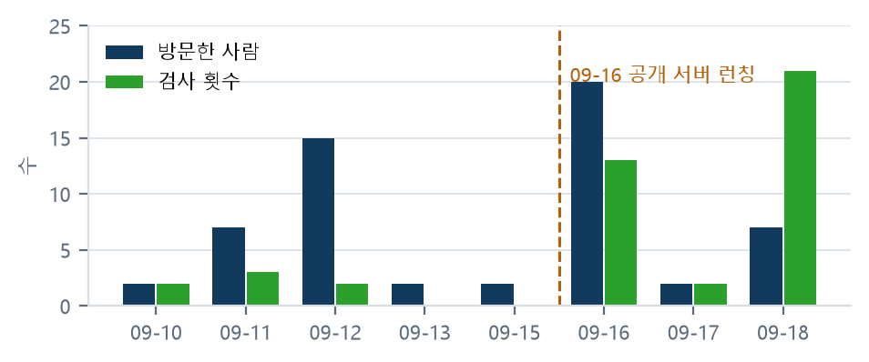
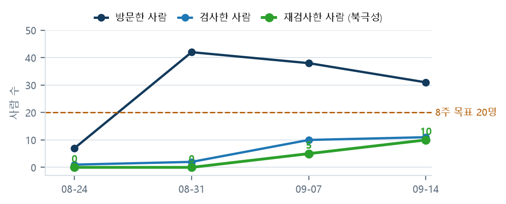
집계 결과는 웹 화면 하단과 /api/stats에 가공 없이 공개한다.
비공개 집계를 따로 두지 않는다. 신고·문의 내용만 관리 화면에서 팀이 열람하며, 이는 공개하지
않는다(제9장 제1절).
| 주간 | 방문 | 검사 시작 | 결과 확인 | 재검사 |
|---|---|---|---|---|
| 09-14 ~ 09-20 | 31명 | 35%(11/31) | 100%(11/11) | 91%(10/11) |
| 09-07 ~ 09-13 | 38명 | 26%(10/38) | 100%(10/10) | 50%(5/10) |
| 08-31 ~ 09-06 | 42명 | 5%(2/42) | 100%(2/2) | 0%(0/2) |
| 08-24 ~ 08-30 | 7명 | 14%(1/7) | 0%(0/1) | 0%(0/1) |
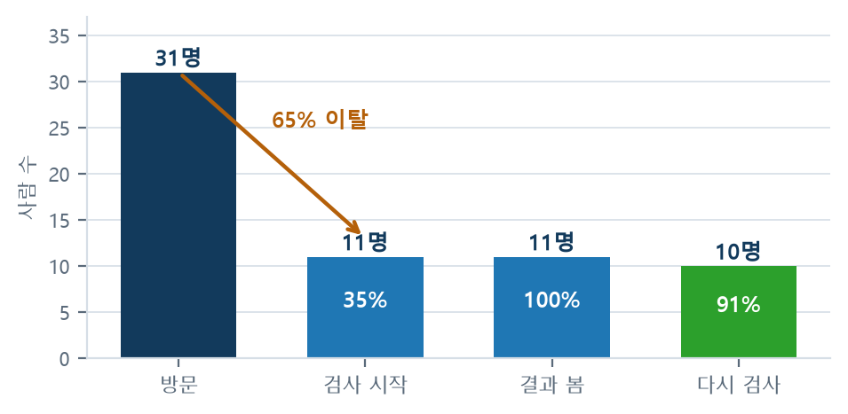
최대 이탈 구간이 지나치게 넓어 개선 지점을 특정할 수 없었다. 파일 선택창을 열지 않은 경우와 열었으나 올릴 파일이 없어 중단한 경우가 같은 구간에 포함되어 있었고, 두 경우의 대응 방법은 서로 다르다(전자는 화면이 용도를 전달하지 못한 것, 후자는 업로드할 파일이 없는 것). 따라서 2026-09-25에 "파일 선택" 단계를 퍼널에 추가하였다. 파일명은 전송하지 않는다.
해당 주간 방문이 31명에서 1,199명으로 증가하였다. 09-21 하루에 방문 651명, 검사 1,001회가 기록되었으나 같은 주 검사 인원은 29명에 불과하였다. 1인이 하루에 검사를 34회 수행한다고 보기 어렵다.
원인은 특정하지 못하였다. 비인적 접속 제외를 적용한 시점이 09-23이므로 이전 기록은 소급 확인이 불가능하다. 따라서 해당 주간의 방문 수치는 본 보고서의 표와 그림에서 제외하고, 09-14 주간까지를 기준으로 분석하였다. 이러한 수치를 그대로 "이용자 1,199명"으로 제시하는 것이 곧 허수 지표이다.
방문자 식별값이 서버만 아는 임의값 + 해당 주차 + IP의 해시이므로,
주차가 바뀌면 동일인도 다른 값이 된다. 개인정보를 남기지 않기 위한 설계였으나,
그 결과 "1주차에 방문한 사람이 2주차에 다시 왔는가"를 구조적으로 확인할 수 없었다.
과거 기록으로 소급 산출하는 것도 불가능하다.
개인정보 처리방침에 "쿠키를 사용하지 않는다"고 세 곳에 명시하였고 이용자 대부분이 미성년자이므로, 해당 약속을 번복하지 않기로 하였다. 대신 화면이 이미 사용 중인 저장 영역에 처음 방문한 주의 월요일 날짜 한 줄만 보관하고 그 날짜만 서버로 전송한다(2026-09-24). 개인을 지칭하는 값은 생성하지 않으며, 무엇이 저장되고 무엇이 전송되는지를 처리방침에 기재하였다.
따라서 본 보고서에는 리텐션 곡선의 실측값이 없다. 첫 수치는 2026-09-29에 산출된다. 추정값으로 곡선을 채우지 않았다.
한 주 안에서는 반복 이용된다. 검사를 시작한 사람의 50~91%가 같은 주에 다시
업로드한다(09-14 주 91%, 09-07 주 50%). 검사 → 수정 → 재검사 순환이 실제로
작동하고 있음을 보여 준다. 다만 본 서비스는 시험 준비 기간에만 사용되는 성격이므로,
주를 넘는 재방문율이 낮더라도 제품의 결함이 아니라 서비스의 성격일 수 있다.
낮게 산출될 것으로 예상된다는 이유로 미리 다른 수치로 교체하면, 수치가 좋아 보이도록 선택한 것이 된다. 2026-09-29에 첫 수치를 확인한 뒤 결정하며, 변경하는 경우 변경일과 사유를 함께 기재한다. 변경 시 후보 지표는 1인당 검사한 도면 수이다.
| 구분 | 개선 전 | 개선 후 |
|---|---|---|
| 예제 도면 실행까지 | 버튼 선택 → 목록까지 화면 이동 → 항목 재선택(2회 조작) | 버튼 1회 조작 |
| 예제 검사 실적 | 22일간 22회(1일 1회, 전체 검사의 1.8%) | 2026-09-29 산출 예정 |
| 방문 → 검사 시작 | 26~35% | 2026-09-29 산출 예정 |
선정 사유 — 최대 이탈 구간에서 이용자가 수행할 수 있는 행위가 "도면 파일을 업로드한다" 한 가지뿐이었다. 예제 도면은 존재하였으나 2회 조작을 거쳐야 하였고 22일간 22회 사용되었다. 도면이 없는 이용자가 결과 화면을 볼 수 있는 유일한 경로가 1일 1회 사용된 것이다.
이탈 사유를 이용자에게 직접 확인한 바가 없다. 따라서 같은 주에 "파일 선택" 단계를 퍼널에 추가하여 선택창을 열지 않은 경우와 열었으나 파일이 없어 중단한 경우를 분리하였다. 두 수치가 모두 움직이지 않으면 이 조치는 틀린 것이며, 그 사실을 기록한다.
이용자 대부분이 미성년 수험생이므로, "수집할 수 있으므로 수집한다"가 아니라 "없어도 되는 것은 아예 받지 않는다"를 기본 원칙으로 설정하였다. 아래는 현재 실제로 적용되어 있는 사항이며, 동일한 내용을 웹 화면 하단에 4개 국어로 공개하고 있다.
| 구분 | 내용 |
|---|---|
| 수집하지 않는 것 | 계정·로그인·회원가입이 없다. 이름·전자우편·전화번호·학교·수험번호를 요구하지 않는다. 쿠키를 사용하지 않는다. 제3자 분석 도구, 광고 SDK, 오류 수집 도구를 일체 사용하지 않는다. 외부에서 불러오는 자원이 없어 화면 글꼴까지 서버에 직접 적재하였다. |
| 집계하는 것 | 날짜 · 방문자 값 · 종류 · 횟수 네 가지뿐이다(제8장 제1절). |
| 방문자 값의 성격 | 서버만 아는 임의값 + 해당 주차 + IP를 해시한 16자.
IP 원본도, 해시를 역산할 수 있는 정보도 저장하지 않는다. 자동 시험이 저장 파일에
IP 원본 문자열이 남지 않는지 실제로 읽어 확인한다. |
| 주 단위인 이유 | 목표 지표가 주간 재검사 사용자 수이기 때문이다. 주차가 바뀌면 동일인도 값이 달라져 주를 넘겨 추적할 수 없다. |
| 집계하지 않는 것 | 어떤 도면을 업로드하였는지, 파일 이름, 검사 결과 점수, 브라우저 종류, 유입 경로 — 전부 집계하지 않는다. |
| 열람 범위 | 제한 없음. 화면 하단과 /api/stats에 그대로 공개한다.
비공개 집계를 따로 두지 않는다. |
| 2026-09-24 추가 | 주를 넘는 재방문 확인을 위하여 처음 방문한 주의 월요일 날짜 한 줄을 브라우저에 보관하고 그 날짜만 전송한다. 쿠키가 아니며, 개인을 지칭하는 값(번호·이름·기기 정보)은 생성하지도 전송하지도 않는다. 브라우저에서 사이트 데이터를 삭제하면 함께 삭제되며, 삭제 시 다음 방문에서 신규 이용자로 집계된다. |
표제란의 작성자·설계자 칸을 판독하여 "파일 정보"에 표시하기 때문이다. 본 팀이 별도로 수집하는 것이 아니라 도면 파일에 원래 포함되어 있는 값이다. 노출을 원하지 않으면 업로드 전에 삭제하여야 한다. 이 사실을 처리방침에 명시하고 있다.
2026-09-21부터 오류 신고·문의 창구를 운영한다. 여기에 기재된 내용은 팀만 열람하며 공개하지 않는다. 연락처는 선택 입력이고 기재하지 않아도 접수된다. 신고 내용은 AI로 전송하지 않고 기록에만 보관한다.
| 항목 | 조치 내용 |
|---|---|
| 결제 | 결제 수단이 존재하지 않는다. 전면 무료로 운영한다 |
| 광고 · 추적 | 광고와 추적 코드가 존재하지 않는다 |
| 개인정보 입력란 | 이름·나이·학교를 요구하는 입력란이 없다. 신고 창구의 연락처 한 칸만 선택 입력이다 |
| 이용자 간 접촉 | 채팅·댓글·게시판·프로필·친구 기능이 일체 없다. 이용자끼리 만날 수 있는 공간을 만들지 않음으로써 접촉·괴롭힘이 발생할 구조 자체를 제거하였다 |
| AI와의 대화 | 이용자가 문장을 입력하여 AI와 자유롭게 대화할 수 있는 지점이 없다. 질문 버튼은 사전에 정한 3개뿐이며 답변도 채점 시 함께 생성하여 저장한 것이다 |
| 신고 내용 | 신고 창구에 기재한 내용은 AI로 전송하지 않는다 |
| 관리 화면 | 환경변수의 비밀번호로만 접근하며 2시간 임시 인증으로 동작한다. 비밀번호를 여러 차례 틀리면 잠긴다. 검색 엔진 수집과 브라우저 캐시를 차단한다 |
| 구분 | 내용 |
|---|---|
| AI가 생성하는 것 | 100점 중 투상도 30점과 총평 문장. 지적별 질문 3개의 답변도 채점 시 함께 생성한다 |
| 규칙이 담당하는 것 | 나머지 70점과 오작 판정 6종 |
| 화면 표기 | AI가 채점한 항목에 AI 표시를 부착한다 |
| 점수의 성격 | AI 점수는 실행할 때마다 동일하지 않으므로 확정 점수가 아니다. 화면에도 그렇게 표기한다 |
| 개발 과정의 AI | 코드 작성·정리, 문서와 번역 초안에 AI 도구를 사용하였다. 전부 사람이 확인한 뒤 반영하였다. 제품 안의 AI와 개발 도구의 AI를 혼동하지 않도록 구분하여 기재한다 |
도면의 저작권은 작성자에게 있다. 검사 기준은 KS 규격과 공개된 채점 기준만을 근거로 작성하였으며 비공개 채점표를 열람하거나 전재한 사실이 없다. 예제 및 검증용 도면은 직접 제작하였거나 개인정보를 제거한 것이며, 제3자의 도면을 임의로 저장소에 포함하지 않았다. 공개문제 파일을 저장소에 재게시하지 않았다.
2026-09-01 ~ 09-07 기간에 실시하였다. 확인하지 못한 항목은 확인한 것처럼 기재하지 않았다.
| # | 점검 항목 | 결과 |
|---|---|---|
| 1 | 코드와 과거 이력에 API 키가 포함되어 있지 않은가 | 적합 — 실제 키 문자열이 확인되지 않았다 |
| 2 | 키가 환경변수로만 주입되는가 · 비밀 파일이 형상관리 제외 목록에 있는가 | 일부 부적합 — 코드는 전부 환경변수만 사용하나, 비밀 파일이 제외 목록에 누락되어 있었다. 커밋된 사실은 없으나 실수로 포함될 수 있는 구조였으므로 점검 당일 제외 목록에 추가하였다 |
| 3 | AI 응답 캐시에 개인정보가 혼입되어 있지 않은가 | 적합 — 현재 비어 있음. 다만 캐시가 축적되기 시작하면 재점검이 필요하다. 파일명은 그림 해시이므로 안전하나 응답 내부의 지적 문구에 표제란의 이름이 포함될 수 있다 |
| 4 | 업로드 도면이 실제로 1시간 후 삭제되는가 | 일부 확인 — 정리 로직은 로컬에서 검증하였다. 운영 서버에서의 실시간 확인은 수행하지 못하였다 |
정리 함수가 2026-09-01까지는 주기 실행이 아니라 새 검사 요청이 있을 때만 호출되었다. 즉 어떤 작업 폴더가 1시간을 초과하여도 이후 검사 요청이 없으면 다음 요청 시점까지 디스크에 남아 있었다. 방문이 뜸한 시간대에는 화면 문구("최대 1시간 후 삭제")보다 실제로 더 오래 잔존할 수 있었다는 뜻이다. 2026-09-02에 10분 주기 실행으로 변경하였고, 요청이 없는 상태에서도 삭제되는지 확인하는 자동 시험을 추가하였다. 화면 문구를 바꾸지 않고 코드를 문구에 맞추는 방향으로 조치하였다.
프로젝트의 코드와 문서는 MIT 라이선스이다. 다만 두 구성 요소가 전염성 라이선스이다.
| 구성 요소 | 라이선스 | 취급 |
|---|---|---|
GNU LibreDWG (dwg2dxf) | GPL-3.0-or-later | 라이브러리로 링크하지 않고 별도 실행 파일을 프로세스로 호출하는 방식으로만 사용한다 |
| PyMuPDF | AGPL-3.0 | 네트워크로 서비스하면 소스 공개 의무가 발생한다. 저장소를 전부 공개하고 있으므로 현재는 문제가 없으나, 소스를 비공개로 전환하여 판매하려면 선행 정리가 필요하다 |
이용자가 업로드한 도면의 저작권은 업로드한 사람에게 있으며 본 라이선스와 무관하다.
| 사항 | 성격 |
|---|---|
| 비밀 파일이 형상관리 제외 목록에서 누락 | 사고가 발생한 것이 아니라 발생할 수 있는 구조였다. 실제 유출은 없었으나 구조를 먼저 차단하였다 |
| 정리 작업이 요청 시에만 실행 | 화면 문구와 실제 동작이 달라질 수 있는 구조였다. 문구를 바꾸지 않고 동작을 문구에 맞추었다 |
| 응답 캐시에 이름이 혼입될 가능성 | 현재는 비어 있으나 축적 시 재점검이 필요하다 |
점검 항목 4건 중 2건이 "일부 적합"이다. 적합으로 반올림하지 않았다. 또한 확인하지 못한 사항(운영 서버 실증, 휴면 전환 시 동작)은 미확인으로 남기고 담당과 조건을 함께 기재하였다. 점검표의 목적은 적합 판정을 받는 것이 아니라 확인된 것과 확인되지 않은 것을 구분하는 것이다.
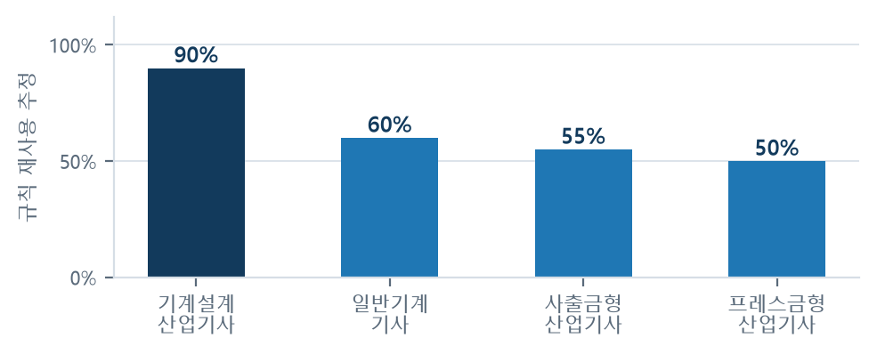
일반기계기사는 필답형(기계요소설계)이 포함되어 실기 전체를 다루지 못한다. 도입하더라도 "작업형만 검사한다"는 안내가 반드시 필요하다.
현재 수익 구조가 없으며 매출도 없다. 아래는 실적이 아니라 검토한 가능성이다.
| # | 방식 | 내용과 판단 |
|---|---|---|
| 1 | 학교 대상 공급 (가장 현실적) |
학급 단위 화면 — 학생별 제출 기록, 학급에서 빈발하는 항목, 과제 배포·수합. 교사의 채점 시간을 경감하는 대가로 연 단위 계약. 미성년자에게 직접 결제를 부과하지 않아도 된다는 점에서도 적합하다 |
| 2 | 개인 무료 · 부가 기능 유료 | 기본 검사는 무료 유지. 상세 첨삭, 기록 무제한 보관, 보고서 출력만 유료화. 다만 결제는 보호자 또는 학교 계정으로만 개방하여야 한다 |
| 3 | 유사 자격으로 확대 | 전산응용건축제도기능사, 기계설계산업기사는 파일 형식과 채점 구조가 유사하여 규칙 추가로 대응 가능하다 |
| 4 | 기업 도면 검토 자동화 | 제조 기업 설계팀이 실제로 수행하는 업무이나 요구 정확도가 훨씬 높아 현 단계에서는 이르다 |
① 정확도 검증이 불충분하다. 실제 도면 23장은 한 학생의 것이며 6개 항목만 정답을 부여하였다. ② AI 점수가 실행마다 동일하지 않다. 규칙으로 이전하거나 편차를 축소하여야 한다. ③ 전염성 라이선스 2건의 정리가 필요하다. ④ 미성년자 대상 과금은 규제 대상으로 법정대리인 동의 등의 요건이 따른다.
번호가 곧 우선순위이다. 상위 항목이 해결되지 않으면 하위 항목을 수행할 의미가 없다.
| # | 과제 | 완료 사항 | 잔여 사항 |
|---|---|---|---|
| 1 | 실제 수험생 도면으로 정확도 재측정 이것이 해결되지 않으면 나머지가 무의미 |
학생 도면 32장 확보 → DXF 30장 변환(서로 다른 23장) · 동일 방식 재측정 · 자체 제작 도면과 실제 도면 결과를 나란히 공개 | 여러 학생의 완성 도면으로 재측정(현 23장 중 20장이 작업 중간 상태) · 교사가 채점한 도면으로 전 항목 정답 부여 |
| 2 | AI 점수 편차 축소 | 편차 측정 도구 제작 · 백지 렌더링 조치 · 채점기 폴백 실동작 · 캐시 적중 · 채점 모델 실측 교체 | 규칙으로 이전 가능한 항목 이전 · 복수 질의 후 중앙값 사용 검토 · 오판 사례 수집 · 잘리지 않은 그림으로 편차 재측정 |
| 3 | 미검출 항목 축소 | 선 4개로 작도한 윤곽선 인식(실제 도면 30장 중 28장 인식, 도면 크기 판정 복구) | 선으로만 작도한 거칠기 기호 · 직접 작도한 기하공차 기입틀 · 표준 명칭이 아닌 중심선 레이어 · 요목표 판독 |
| 4 | 퍼널 최대 이탈 구간 개선 | "파일 선택" 단계 추가 · 예제 도면 실행 절차 단축 | 이탈 이용자 직접 확인 · 2026-09-29 수치로 조치 효과 검증 |
| 5 | 자동 시험 기준선 상향 | — | 점검 대상에 합성·실제 도면 포함 · 기준선을 실제 달성 수준으로 상향 |
| 6 | 운영 서버 삭제 실증 | 로컬 검증 · 주기 실행 전환 | 운영 서버에서 1시간 삭제 실증 · 휴면 전환 시 동작 확인 |
| 7 | 타 종목 확장 | 재사용률 조사(50~90%) | 종목별 공개문제 3개 회차 이상 확보 후 착수 |
| 자료 | 수록 내용 |
|---|---|
README.md | 전체 설명 · 구성 · 검사 내용 · 공개 고지 |
docs/accuracy.md | 정확도 측정 전문 · 일자별 재측정 · 미검출 표 |
docs/metrics.md | 지표 정의 · 퍼널 · 리텐션 · 개선 전후 |
docs/interviews.md | 대면 면담 5건 전문 · 설문 응답 |
docs/policy.md | 개인정보 · AI 생성물 · 미성년자 · 저작권 |
docs/rule_standards.md | 검사 항목별 KS 규격 근거 |
docs/ai_usage.md | AI 사용 기록 · 모델 선정 실측 |
docs/security_check.md | 보안 점검표 |
docs/mvp.md | 개발 범위와 제외 범위 |
docs/roadmap.md | 향후 계획과 우선순위 |
| 자료 | 수록 내용 |
|---|---|
docs/impact.md | 응시자 통계 · 사회적 가치 · 사업화 |
plan/문제점/ | 문제 24건, 한 건당 문서 1개 |
plan/w1~w8/ | 주차별·일자별 계획과 달성 기록 |
plan/역할분담/ | 개인별 배정과 수행 내역 |
example/ | 타 종목 조사 · 재사용률 · 응시자 통계 |
NOTICE.md | GPL · AGPL 취급 |
docs/fig/make_figs.py | 본 보고서 도표 13종의 생성 코드. 수치를 그림에 직접 기입하지 않고 코드 내 값으로 보유하므로 수치 변경 시 도표도 갱신된다 |
| 즉시 확인 가능한 창구 | |
| 서비스 | naverogq.onrender.com (가입·설치 없음) |
| 검사 근거 | /ks |
| 정확도와 한계 | /accuracy |
| 지표 원자료 | /api/stats (가공 없이 공개) |
CADLens는 제출 직전 확인을 돕는 보조 도구이다. 공식 채점이 아니며 한국산업인력공단 및 Q-Net과 아무런 관계가 없다. 실제 시험에서는 해당 회차의 공개문제와 감독위원 지시사항을 반드시 함께 확인하여야 한다.
2026년 9월 24일 팀 네이놈 박지완 · 장우영 · 안대열 · 김승준